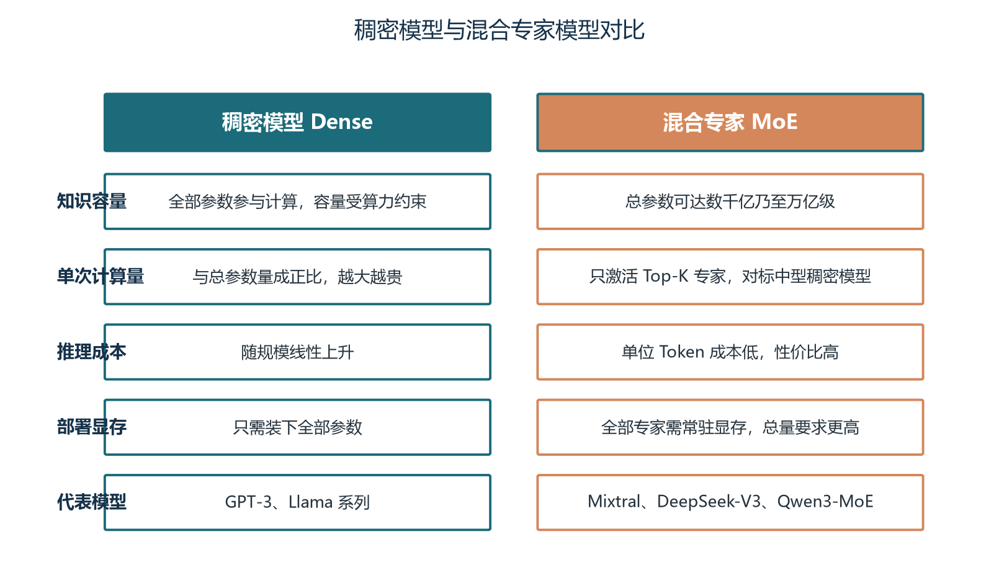
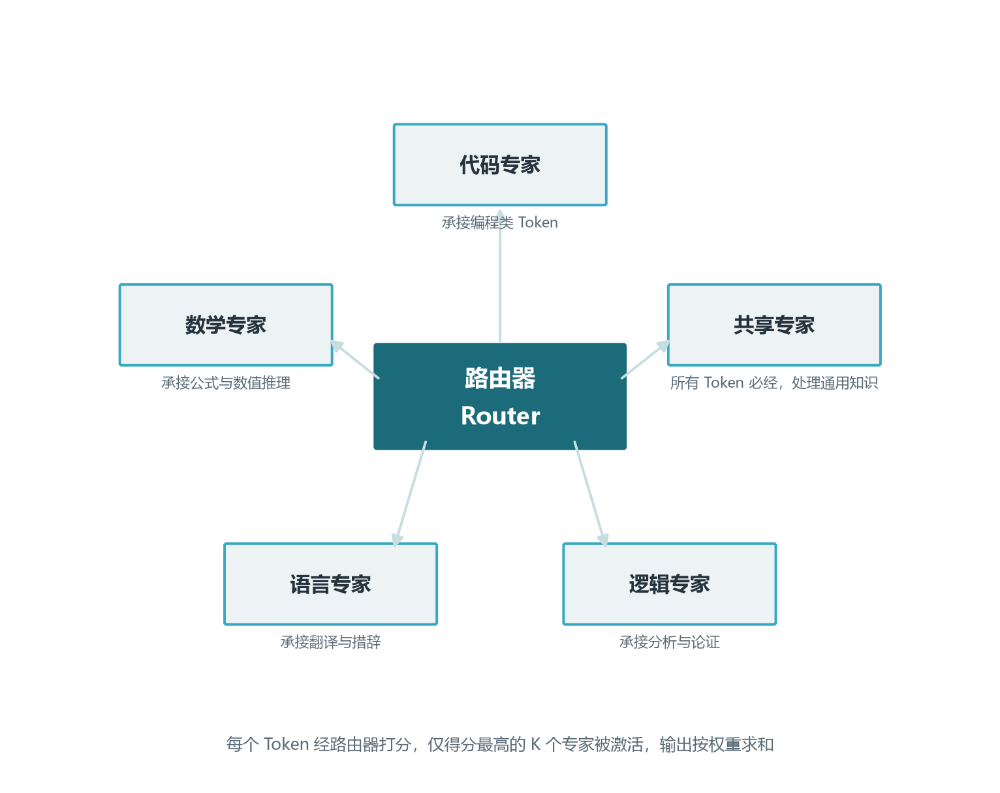
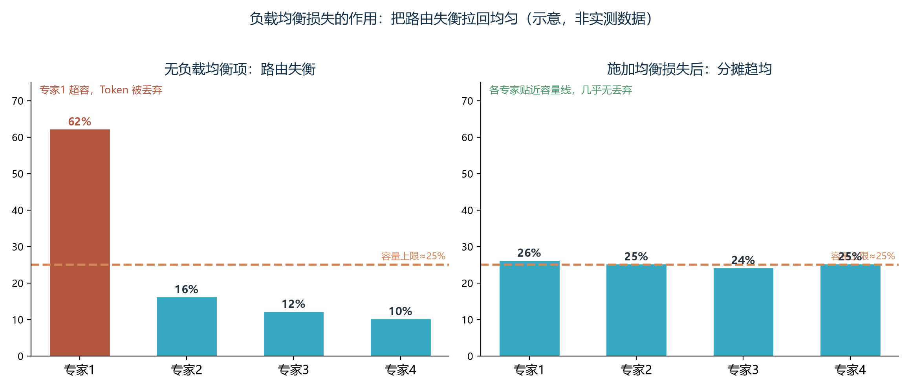
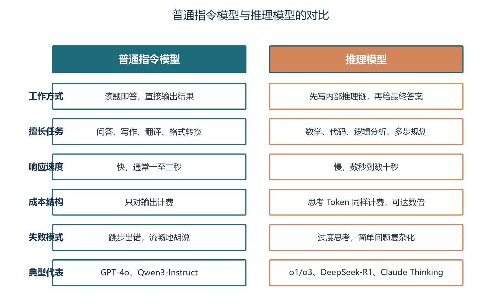
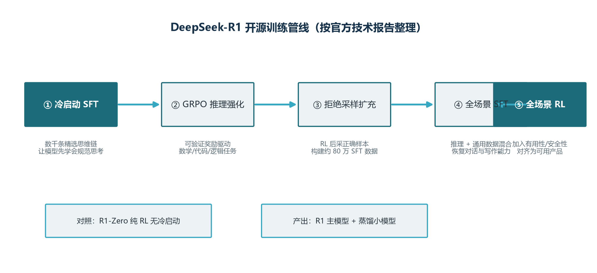
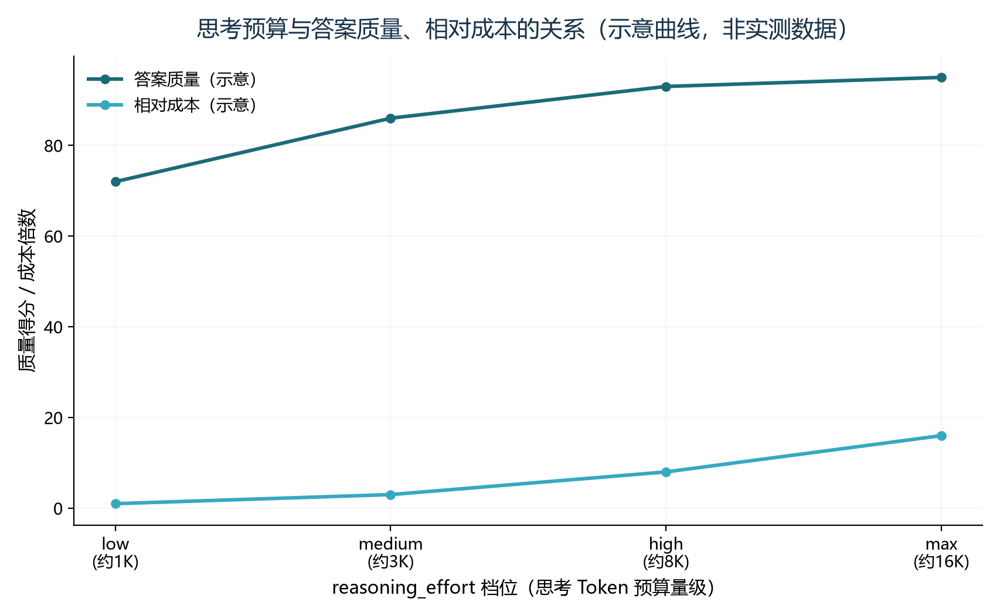
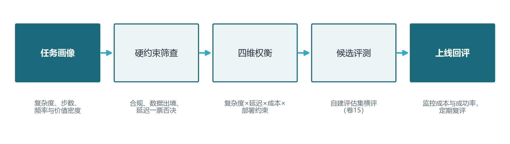
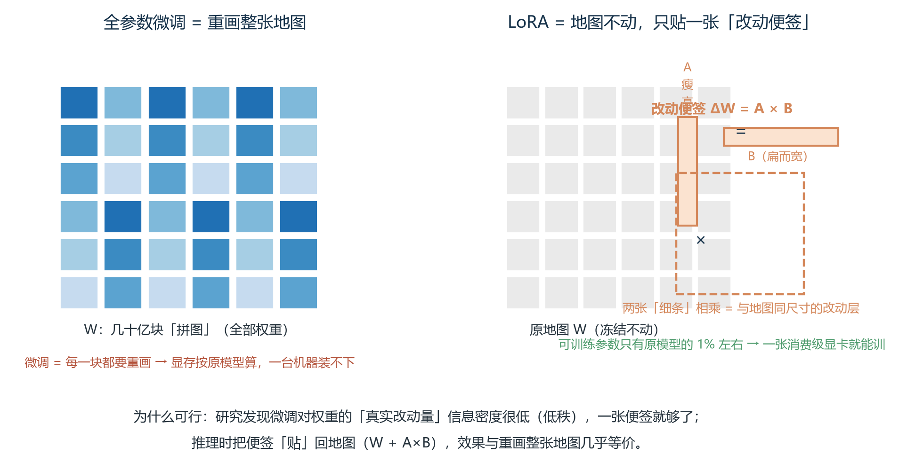
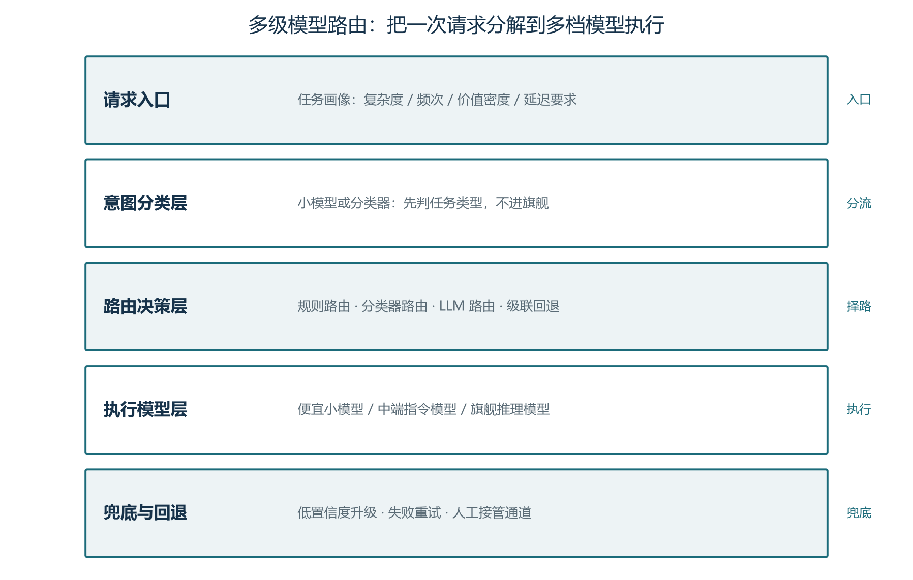

前言：为 Agent 挑一个合适的大脑
上一卷我们沿着 Transformer 的解剖图一路向下，看到了分词、嵌入与向量表示是如何把人类语言翻译成模型能处理的数字。模型层这座"地基"的前两铲已经挖完：原理懂了，识字方法也懂了。接下来的问题更工程，也更紧迫——面对市面上几十个名字相近、版本号频繁更新的模型，Agent 工程师到底该选哪一个？是追新最强的旗舰闭源，还是自部署开源模型？是默认用普通指令模型，还是为关键路径多付几倍成本上推理模型？这些问题没有标准答案，但有清晰的决策框架。本卷就来搭建这套框架。
选型看似是一个"挑商品"的活，骨子里却是工程权衡的集中体现。同一个任务，用 70 亿参数的稠密小模型能跑起来但质量堪忧，用 7000 亿参数的旗舰闭源质量爆表但成本失控，用混合专家架构的开源模型部署门槛陡增但单位 Token 成本最低——每一种选择都伴随明确的代价与回报。这一卷会帮你建立三个层次的认知：第一是"为什么需要架构演进"，理解从稠密到 MoE、从普通模型到推理模型这一系列变化的内在动力；第二是"它们各自擅长什么"，MoE 的稀疏激活、推理模型的思考链、长上下文的大海捞针，这些能力边界必须在动手前画清楚；第三是"如何做出决策"，从硬约束筛查到四维权衡到候选评测，本卷最后给出一套可在工程中复用的决策流程。
本卷是模型层地基的最后一卷，也是后续工程各卷的入口。卷五讲推理服务、卷六讲量化压缩、卷七讲提示词工程——所有这些卷，都默认你已经知道"为什么选这个模型而不选那个"。本卷完成后，你将能够为任何一个 Agent 项目画出清晰的选型路径，而不是凭直觉或营销话术做决定。
学完本卷，你将能够：
- 用一句话讲清楚"稠密模型"与"混合专家"两种架构的本质区别，并解释 MoE 为什么能让单位 Token 成本降低数倍；
- 说出 Top-K 路由、负载均衡损失、共享专家等 MoE 关键概念的工作原理，并指出 MoE 训练中路由坍塌这一最棘手的挑战；
- 区分"普通指令模型"与"推理模型"，理解 reasoning_effort 参数的工程含义，掌握思考预算的成本-质量权衡；
- 列举工具调用、长上下文、多模态三大能力边界的测试方法，并能在自家项目中设计评估集；
- 画出一张覆盖硬约束筛查、四维权衡、候选评测、上线回评四阶段的 Agent 选型决策树，并能说出每阶段的产出物。
本卷的图表编号采用"图 X-Y"格式，X 为章号、Y 为节内序号；表与图独立编号。文中出现的"示意图"标注，表明该图基于公开资料复现的原理示意，非真实评测数据，参考时注意不要直接当作生产基线。完成本卷后，建议结合卷十五（评估体系）做一次小规模的自建评测闭环练习，把决策框架走一遍。
第一章 大模型架构演进脉络：从 GPT 到混合专家
1.1 三阶段演进与三条主线
如果把 2017 年 Transformer 论文发表当作起点，大语言模型的架构演进可以大致划分为三个阶段，每一阶段都解决前一阶段最致命的瓶颈，理解这条主线比记住任何具体模型名字都重要。第一阶段从 2018 年到 2023 年，是"稠密模型扩规模"的黄金年代：BERT、GPT-2、GPT-3、PaLM、Llama 一脉相承，全部采用稠密前馈网络（Dense FFN）作为主力——每个 token 都要流经所有参数，模型的能力随参数规模线性增长，训练和推理的成本也跟着线性增长。这一阶段的成就是确立了"规模即能力"的直觉，问题是这种直觉撞上了一堵墙——把 700 亿参数的稠密模型扩展到 7000 亿甚至万亿时，训练成本、显存占用、单 Token 推理延迟都不可承受。
第二阶段从 2024 年开始，是"稀疏激活"登场的时代：混合专家（Mixture of Experts，MoE）架构成为突破规模上限的关键路径。MoE 的核心思想是把一个庞大的稠密层替换成 N 个并行的"专家"小网络，并配一个路由器（Router）按 token 动态选择其中 K 个专家激活。这样模型的总参数可以膨胀到万亿级，但每次推理只激活其中一小部分（通常 3% 到 10%），推理成本基本维持在中等稠密模型的水平。Mixtral、DeepSeek-V3、Qwen3-MoE 是这条线的代表。第三阶段从 2024 年下半年开始，与 MoE 并行出现的是"推理增强"路线——以 OpenAI o1、DeepSeek-R1 为代表的推理模型，通过强化学习训练模型在回答前先生成一段"思考链"，把推理阶段的可计算时间转化为质量提升。这两条线后来在 DeepSeek-V3+R1 上汇合，构成了 2025 年到 2026 年最主流的架构形态。
这三条主线不是互相替代，而是层叠演进。稠密模型并未消失——它依然是中小规模部署的首选，因为简单可靠；MoE 解决了规模上限问题，但也带来了训练稳定性、推理工程复杂度等新挑战；推理模型增强的是"思考的深度"，与基础架构是正交关系，稠密与 MoE 都可以训练成推理模型。看到一个具体模型时，先问三个问题：它是稠密还是 MoE？激活参数和总参数分别是多少？是否经过推理增强？这三个问题的答案就构成了该模型 80% 的画像。

图1-1 把稠密与 MoE 的核心差异压缩到一张图里，可以看到五个关键维度上的权衡关系：总参数、单次计算量、推理成本、部署显存、代表模型。最值得咀嚼的两个对比是"知识容量 vs 单次计算量"——稠密模型知识容量受算力直接约束，MoE 用总参数换取了独立的知识扩展空间；以及"推理成本 vs 部署显存"——MoE 推理成本更低，但部署时需要把所有专家都装入显存，对硬件的要求反而更高。这种"算力便宜、显存贵"的权衡是 MoE 选型时必须正视的工程现实。
在动手看具体模型之前，还有一个概念值得在演进脉络里点名：参数高效微调（PEFT）虽然不是架构演进主线，但深刻影响了"什么模型值得选"。LoRA、QLoRA 等技术让普通团队可以在消费级显卡上微调 70B 级别的模型，把"是否能微调"从云端实验室的能力下放到每个工程师的工作站。这意味着选型时除了看"模型本身的能力"，还要看"团队能多大程度改造它"——一个强大的开源模型如果微调生态不完善，它的可定制性就大打折扣。这也是为什么 Llama 系列长期保持热度：它的微调工具链是开源社区最完善的。
1.2 稠密扩规模路线的三个天花板
稠密模型的天花板有三层：算力、显存、延迟，三者相互绑定。算力层面，每个 token 都要经过模型的所有参数，因此每秒能处理的 token 数与模型参数量成反比——把模型做大十倍，单机吞吐直接降为十分之一。显存层面，权重、激活值、KV Cache 三者叠加，FP16 精度下 70B 参数的模型需要约 140GB 显存来装权重，单张消费级显卡根本塞不下，必须多卡张量并行或流水线并行。延迟层面，首 token 延迟取决于整个前向传播的串行时间，更大的模型意味着更长的等待；多 token 生成时，每生成一个 token 都要重新跑一遍完整的前向（KV Cache 优化只能缓解、不能根治），延迟随输出长度线性增长。
实际生产中，这三个天花板共同决定了一件事：稠密模型存在一个"经济规模上限"。以 Llama 系列为例，70B 是大量企业自部署的甜点——再往上，单次推理的边际成本开始超过收益，而开源社区也极少提供 200B 以上的稠密模型（不是不能训，是训完也没人用得起）。闭源旗舰如 GPT-4、Claude 3.5 级别的稠密模型虽然存在，但推理服务必须建立在数百张高端 GPU 集群之上，单 token 成本高企，普通团队难以平摊。
这就是 MoE 出场的动机：既然稠密模型的"每个 token 都用全部参数"在物理上不经济，那就反其道而行之——把模型拆成 N 份，每次只激活其中 K 份。模型的总参数可以做得很大（拥有更丰富的知识容量），但每次推理的计算量与一个 K/N 比例的中型稠密模型相当。这就是"用参数容量换计算效率"的本质，也是稀疏激活范式得以在 2024 年全面铺开的原因。
1.3 MoE 的核心动机与朴素直觉
一个直观的类比可以帮你建立 MoE 的第一感觉：把模型想象成一家综合医院。如果只有全科医生，每来一个病人都要派他处理所有科室的疾病，效率低且容易误诊——这是稠密模型。如果拆成心内科、骨科、皮肤科等专科，同时设立分诊台根据病人症状把病例分发给对应专科，专科医生处理自己最擅长的部分，最后由分诊台汇总——这就是 MoE。模型的总"医生数"（总参数）可以非常多，但每次接诊（每个 token 的推理）只需激活其中少数几位（K 个专家），效率成倍提升。DeepSeek-V3 的 1.6 万亿参数中，每次推理只激活约 490 亿参数，相当于一家拥有 1.6 万医生但每次只派 49 位出门诊的超大型医院。
这个类比也暗示了 MoE 的关键挑战：分诊台必须分得准。路由器（Router）的职责是判断每个 token 应该去哪些专家，它分错了，再多专家也白搭。下一章会专门讨论路由机制的设计与训练挑战。本章只需要记住一件事：MoE 不是"稀疏所以便宜"这么简单，它的工程价值在于"用更便宜的推理代价撬动更大的知识容量"，这个权衡在 Agent 场景下尤其重要——一个 7B 参数的稠密模型和一个 8B 激活但 200B 总参数的 MoE 模型在单位推理成本上接近，但后者能装下的世界知识可能是前者的十倍，对 Agent 在长尾问题上的表现影响巨大。
1.4 前传补课：从 N-gram 到 Transformer 的四十年
在 2017 年 Transformer 一统江湖之前，语言建模已经走了近四十年的演化长路，这段前传的价值在于：它解释了为什么今天的模型长成这个样子，也解释了为什么选型时总把"架构"放在最前面。故事要从统计语言模型讲起。上世纪八十年代到九十年代，N-gram 是统治级方案：它假设第 n 个词只与前面 N-1 个词相关（马尔可夫假设），于是通过在语料里统计 n 连词的出现频次来预测下一个词。N 越大上下文越充分，但需要统计的组合数量随 N 指数膨胀，语料永远不够填满那些长尾组合——这是统计语言模型的第一个天花板。工程师们用各种平滑与回退技巧把低频组合的概率补出来，但"数据稀疏"和"上下文被 N 截断"两个结构性缺陷始终无法根治。
2000 年前后，神经网络语言模型开始登场：把词映射成低维稠密向量（词嵌入），用前馈网络预测下一个词，词的相似性第一次有了向量意义上的"距离"。此后 RNN/LSTM 接过接力棒，它们把历史压进一个不断更新的隐藏状态，理论上可以记住任意长的前文——长短期记忆网络（LSTM）用门控机制缓解了梯度消失，让模型能跨几十个词携带信息，这是当时机器翻译、语音识别的标配。但 RNN 的代价同样深刻：隐藏状态只能串行更新，每一个新词都要等待前一步算完，无法并行，训练速度被锁死；更关键的是，把"整段历史"压缩进一个固定大小的向量，本质上是把信息损失写进了架构——序列越长，开头的信息越被稀释（卷02 会详细解剖这一过程）。这就是后来 Transformer 要同时解决的第三个问题。
真正打开局面的，是注意力机制（Attention）的兴起。2015 年前后，神经机器翻译研究者意识到：与其逼解码器从压缩向量里"盲猜"，不如让它每一步都回头去看编码器的所有位置，用一组相关性权重加权求和——权重高的位置就是当前该重点参考的地方。这个"软对齐"动作第一次让"需要哪段信息"由模型自己说了算，也把"序列信息如何取用"从固定压缩变成了按需寻址。2017 年《Attention Is All You Need》把这套思想推到极致：干脆去掉循环结构，让序列中任意两个位置直接互相计算注意力（自注意力），再用多头与残差把它堆深——并行化、长程依赖、可扩展性三个老难题同时被解掉（原理细节见卷02）。回看这四十年，N-gram 教我们用窗口框定上下文，RNN 教我们把历史压缩进状态，Transformer 则宣告"上下文与记忆不必是容量有限的货舱，而可以是任取任用的检索池"。理解这条线索，你就明白了为何架构演进是选型的真正起点，而不是模型名字里多了几个字母。
1.5 Scaling Law 与"规模即能力"的量化视角
1.1 节把"规模即能力"当作既定事实在使用，本节补上它的量化依据，因为选型说到底是在数字上做权衡。2020 年 OpenAI 的经典论文给出了第一批 Scaling Law 经验曲线：在模型不过度训练的前提下，测试损失（困惑度）随参数量、数据量、训练算力的增长按幂律下降——每把参数量或数据量放大若干倍，损失都按一个固定指数收缩。它最重要的工程含义不是"公式好看"，而是"可预测"：在花掉巨额算力之前，就能用小规模实验外推出大模型能到哪个水平，厂商因此敢一次投几千张卡。2022 年 DeepMind 的 Chinchilla 论文把这条曲线补齐了最关键的"配比"视角：对固定算力预算，存在一组"计算最优"的参数与数据组合，经验上约等于每个参数配 20 个训练 token。
20 token 每参数这条经验线，是工程师判断一个模型"货真价实"的第一把尺子。举例：一个 70B 参数的稠密模型，按 Chinchilla 配比大约需要 1.4 万亿 token 训练数据；若厂商只喂了 5000 亿，模型就是"参数虚胖"——而反过来的情形更常见：许多开源模型刻意超配数据（如用 2 到 3 倍于 Chinchilla 的 token 数训练），换取在推理时用更少参数量达到同等效果，因为推理成本正比于参数量而不正比于训练数据量。对 Agent 选型，这条规律的直接推论是：同一量级的参数量下，训练 token 更多、且激活参数更少的模型（配合 MoE，见下章），往往比"参数多但训练不充分"的模型性价比更高。下表给出常见参数量级对应的算力与数据量级，帮你建立第一个数量级直觉。
| 参数量级 | 最优数据量级（约） | 训练算力量级（约） | 参考时间点 |
|---|---|---|---|
| 7B | 140B token | 约 10^22 FLOPs | 2023 年后开源入门级 |
| 70B | 1.4T token | 约 10^23 FLOPs | 2023 年后主流开源 |
| 400B 至 1T | 8T 至 20T token | 约 10^24 至 10^25 FLOPs | 2024 年后旗舰开源 |
| 1T 以上 | 20T token 以上 | 10^25 FLOPs 以上 | 2025 年后前沿阵营 |
读这张表请先记住一个换算：训练一个模型的算力约等于 6 乘参数量乘训练 token 数（6ND 经验公式），所以参数量与数据量每上一个数量级，训练成本大致上升两个数量级——这正是闭源巨头动辄投入数亿美元、而普通团队连 7B 级别都要认真掂量的原因。同时要提醒一句：Scaling Law 描述的是"通用语料下的平均损失"，它不保证你的业务任务一定随之变好。一个 7B 模型在翻译任务上可能打平 70B 通用模型，因为任务维度窄、数据密度高；而一个 70B 模型也可能在某个冷门领域被微调过的 7B 反超（卷06 微调、卷15 评估会分别给出"能力从哪来"和"如何测出来"的答案）。所以对 Agent 工程师，Scaling Law 的正确用法是：用参数与数据量级做粗筛，永远不要用它替代任务级实测。
"参数量大=能力强"只在"训练数据充分"时成立。Chinchilla 之后的共识是：看模型先看三件事——参数总量、激活参数（MoE 场景）、训练数据量级；三个数字都亮，再谈能力。卷15 会教你如何用自建评估集把这三个数字翻译成你业务上的真实增益。
第二章 MoE 混合专家架构：让模型像专家门诊一样分工
2.1 整体结构：一个 Token 的旅程
MoE 层把 Transformer 中标准的稠密前馈网络（FFN）替换为一个由 N 个并行专家网络加一个路由器组成的"组合件"。每个专家本身就是一个标准 FFN——两层线性变换中间夹一个激活函数——但拥有独立的参数；路由器是一个轻量的线性层加 Softmax，输出每个专家被选中的概率。一个 token 走过 MoE 层的步骤是四步：第一，路由器读入 token 的隐藏向量，输出 N 个专家各自的"分诊权重"；第二，按 Top-K 策略挑选权重最高的 K 个专家，其余专家不参与计算；第三，被选中的 K 个专家各自对这个 token 做 FFN 前向传播，得到 K 个输出向量；第四，把这 K 个输出按路由器权重加权求和，作为该 token 经过 MoE 层的最终表示，写回隐藏状态供下一层使用。
这个过程的工程实现远比描述复杂。最关键的两个技术点需要提前了解：一是负载均衡损失（Load Balancing Loss）——为了让路由器不把所有 token 都分给同一个或少数几个专家，需要在训练损失里加入一项"专家使用率均衡项"，惩罚分配不均。二是专家并行（Expert Parallelism）——在分布式训练中，不同专家被放置在不同的 GPU 上，一个 token 要先被发送到目标专家所在的卡上计算，再把结果收回来，这种 All-to-All 通信模式是 MoE 训练最大的工程瓶颈。这两点后面会展开，先看图2-1 建立整体印象。

走完图2-1，记住一个关键事实：MoE 层里 N 个专家是同时存在的（都常驻显存），但任何一次前向传播只有 K 个被"用上"。这意味着 MoE 模型的显存占用接近稠密模型的 N/K 倍（因为所有专家都要装下），而计算量只相当于稠密模型的 K/N 倍——显存和算力出现了解耦，这是 MoE 工程设计中最重要的物理事实。
2.2 路由机制：四种流派与共享专家
路由器的设计直接决定 MoE 的训练稳定性和最终质量。当前主流的路由策略可以归纳为四类。Token Choice（token 选择型）是最朴素的方案：每个 token 独立选择 Top-K 个专家，实现简单但容易出现负载不均——某些专家成为"明星专家"，其他沦为"死专家"。Expert Choice（专家选择型）反其道而行之：每个专家反向选择固定数量的 token，从源头保证负载均衡，但可能破坏 token 间的语义关系。Hash Routing（哈希路由型）用哈希函数把 token 固定分配到专家，无需学习路由参数，但灵活性差，性能受限。Shared Expert（共享专家型）则是 DeepSeek 提出的创新：在 Top-K 路由专家之外，额外保留一个对所有 token 都激活的"通用专家"，由它处理语法、常见表达等通用知识，路由专家则专注特定领域——这种设计显著减少了参数冗余，提升了参数利用效率。
共享专家的动机可以用一句话概括：让专家分工更纯粹。传统的纯路由 MoE 中，每个专家都要学习一些通用知识（因为没有任何 token 是纯粹的"代码"或纯粹的"数学"），这导致所有专家里都包含一份重复的"通用基础"，参数利用效率低。引入共享专家后，路由专家可以完全专注自己的领域，不需要为通用知识留位置。DeepSeek-V3 的设计中，1 个共享专家加 256 个路由专家的组合被验证效果显著优于纯路由设计，已经成为后续 MoE 模型的参考范式之一。
理解了这四种路由策略后，回头看 DeepSeek 系列就会发现它的设计哲学非常清晰：尽可能用结构性的约束（共享专家、专家容量、负载均衡损失）来替代纯学习式的路由，降低训练不稳定性。这也提醒我们一个普适的工程经验：当你引入一个需要学习的机制（路由器），就同时要引入防止它学坏的护栏（均衡损失、容量限制），否则训练出的模型可能只在你的评估集上漂亮，遇到边缘场景就崩。
2.3 Top-K 激活策略：K 的选择是门艺术
Top-K 是 MoE 最关键的超参数，决定每个 token 激活多少个专家。K 太小（K=1），专家之间的协同效应无法发挥，每个 token 只能听一位"专家"的意见，对复杂语义容易判断失误；K 太大（K 接近 N），计算量向稠密模型退化，失去了 MoE 的意义。实践中常见的取值与权衡如下：
| K 值 | 激活参数比例 | 计算量 | 性能 | 典型部署 |
|---|---|---|---|---|
| K=1 | 约 1/N | 最低 | 一般 | 边缘设备、超低延迟 |
| K=2 | 约 2/N | 低 | 良好 | Mixtral 8x7B 等通用推理 |
| K=4 至 8 | 约 4/N 至 8/N | 中等 | 优秀 | 生产环境主流配置 |
| K=N | 100% | 最高 | 等同稠密 | 退化为稠密模型 |
在工程实践中，K 的选择需要同时权衡三个变量。第一是激活参数总量，它决定单 token 的推理成本和显存占用——K 翻倍，推理时间和显存压力基本翻倍。第二是专家覆盖度，决定模型对复杂语义的处理能力——例如数学证明需要同时调用推理专家、符号计算专家和语言表达专家，K 太小可能漏掉。第三是通信开销，在专家并行的分布式训练中，K 越大，每个 token 要被发送到越多专家所在的 GPU，All-to-All 通信成本越高。DeepSeek-V3 选择 K=8（1 个共享 + 7 个路由）是因为它在 1.6 万亿总参数规模上发现 K 越大收益越高；Mixtral 8x7B 选择 K=2 则是 8x7B 规模上的最优平衡点。不存在"通用最优 K"，只有"在当前规模下的最优 K"。
一个常被忽略的细节是：K 的选择还影响训练稳定性。K=1 时路由决策容错率最低——路由器一旦分错，这个 token 的整个 MoE 层就废了，没有任何补救机会；K 越大，多个专家的输出相互印证，路由错误的负面影响被平均化，模型更鲁棒。这也是为什么在大规模 MoE 中（参数越多、专家越多），K 反而倾向于取更大值——专家池子大，必须给路由器更多"试错空间"。
2.4 训练挑战：路由坍塌、通信开销与数值稳定性
MoE 训练面临三个相互纠缠的难题，理解它们能帮你判断一个开源 MoE 模型是否真的"训好了"。第一个是路由坍塌（Routing Collapse）：路由器在训练早期偶然发现某些专家表现更好，于是把更多 token 分给它们；这些专家获得更多训练数据，表现进一步提升，形成正反馈；最终大部分 token 都被路由到少数几个专家，其余专家几乎不被使用，整个模型的有效参数量大幅缩水——明明定义了 256 个专家，实际起作用的可能只有 32 个。解决路由坍塌有四种主流手段：负载均衡损失（前面已述）、路由噪声注入（在训练时给路由器 logits 加少量高斯噪声，鼓励探索）、专家容量限制（给每个专家设上限 Token 数，超出的 Token 被丢弃或重路由）、Z-Loss 正则化（约束路由器 logits 的绝对值大小，防止过自信）。
第二个挑战是通信开销。稠密模型的分布式训练主要是张量并行（切分权重）和流水线并行（切分层），通信模式相对规则；MoE 还要叠加专家并行——不同专家分布在不同 GPU 上，每个 token 要被送到对应专家的卡上，计算完再送回来。这种 All-to-All 通信在多节点训练时是带宽杀手，业界为此投入了大量工程优化：通信与计算重叠（GPU 在等待数据传输时执行其他计算）、Token 丢弃（在专家输入队列过长时主动丢低优先级 Token）、FP8 通信（用更低位宽传输中间表示）。这些优化是 MoE 模型能够训练万亿参数规模的关键，也是为什么 MoE 训练的工程门槛远高于稠密模型。
第三个挑战是数值稳定性。路由权重是 Softmax 输出，理论上在 0 到 1 之间，但在训练早期容易出现极端值——某些专家权重接近 1，其他接近 0。极端权重会让梯度在回传时出现尖峰，导致训练不稳定甚至崩溃。BF16（Bfloat16）相比 FP16 有更大的数值范围，是当前 MoE 训练的事实标准；Router Z-Loss（对路由器 logits 做 logsumexp 平方惩罚）也是常用的稳定化技巧。这三个挑战——路由坍塌、通信开销、数值稳定性——共同构成了"训好一个 MoE 模型比训好一个稠密模型难一个数量级"的根本原因。Agent 工程师在选型时，对 MoE 模型要特别关注其训练细节是否被公开、复现是否可信，而不是只看宣传里的总参数数字。
2.5 DeepSeek 案例透视：一个万亿 MoE 的设计哲学
DeepSeek 系列（V2、V3、R1）是 2024 年到 2025 年最具代表性的 MoE 实践，把它当案例可以串起本章所有概念。DeepSeek-V3 的总参数约 6710 亿（业内通常引用 1.6 万亿是早期 V4 传闻与 R1 蒸馏后的版本叠加，这里以公开的 V3 数据为准），但每次推理只激活约 370 亿参数（约 5.5%）；专家配置是 1 个共享专家加 256 个路由专家，每个 token 激活 1 个共享专家 + 8 个路由专家（即 K=9）。这个组合实现了几个工程目标：第一，总参数规模接近稠密旗舰的两倍，知识容量极大；第二，激活比例只有 5% 左右，推理成本与一个 370 亿参数的稠密模型相当；第三，共享专家 + 路由专家的结构，让参数利用率显著优于纯路由 MoE。
DeepSeek 的另一个关键创新是多头潜在注意力（Multi-head Latent Attention, MLA）。Transformer 的 KV Cache 在长上下文场景下显存占用巨大——每个 token 需要为每个注意力头存储 Key 和 Value 向量，序列越长、头数越多，显存压力越呈线性增长。MLA 的核心思想是把 KV 压缩到一个低维"潜在向量"中，推理时再解压恢复，可以把 KV Cache 的显存占用减少 90% 以上。这一优化与 MoE 架构是正交叠加的，让 DeepSeek-V3 能够在有限的显存下支持 128K 上下文，同时维持较低的推理成本。
从 Agent 工程师的视角看，DeepSeek 案例最值得借鉴的不是某个具体参数，而是它的设计哲学：用结构性的约束（共享专家、MLA、Z-Loss）替代纯学习的不可控机制（自由路由、稠密注意力）。这种"在工程层面提前堵漏洞"的思路，是所有大规模分布式系统训练的通用经验——当你引入一个强大但难以调试的机制时，必须同时设计它的护栏。在卷五的推理服务章节我们会回到这个话题，看 vLLM、SGLang 等推理引擎如何为 MoE 模型做专家并行与动态专家缓存，进一步理解"理论架构如何变成生产系统"。
| 维度 | 稠密模型 | 混合专家 MoE |
|---|---|---|
| 总参数量 | 与激活量相同 | 可远超激活量，常达万亿级 |
| 单次激活参数 | 100% 总参数 | 通常 3% 至 10% |
| 单 Token 推理成本 | 与总参数量线性相关 | 与激活参数量线性相关 |
| 部署显存 | 等于权重总量 | 等于所有专家权重总和（更大） |
| 训练稳定性 | 成熟稳定 | 需额外平衡机制 |
| 推理工程复杂度 | 较低 | 较高（专家并行、通信优化） |
| 典型代表 | GPT-3、Llama 系列 | Mixtral、DeepSeek-V3、Qwen3-MoE |
稠密与 MoE 的对比是本卷必须吃透的一张表。表中"部署显存"那一行容易引起误解：MoE 的总参数是稠密的 5 到 20 倍，意味着部署时需要的显存也大 5 到 20 倍——但每 token 的实际计算量只有稠密的 5% 到 10%。所以结论是：MoE 适合"显存够大、算力紧张"的场景，比如有一台 A100/H100 工作站但单次只能跑得动中型稠密模型时，部署一个总参 200B 但激活 20B 的 MoE 模型，能用同样的算力获得 10 倍的知识容量。稠密则相反，适合"显存紧张、算力充裕"的场景，比如消费级显卡部署。
还有一个工程细节值得专门点出：MoE 的专家并行与稠密的张量并行在通信模式上完全不同。稠密模型的张量并行是把每一层权重切分到多张卡上，每张卡算一部分然后汇总，通信量与序列长度成正比；MoE 的专家并行则是不同专家在不同卡上，每个 token 要被发送到对应的卡再回来，通信量与激活的专家数成正比。这两种并行方式可以叠加使用——4 路张量并行 × 4 路专家并行 = 16 卡，但通信模式变得非常复杂。推理引擎（如 vLLM 的 MoE 优化、SGLang 的专家调度）必须同时管理两套通信，这是 MoE 部署门槛高的根本原因，也解释了为什么大量团队即使知道 MoE 性价比更高，仍然选择稠密模型——他们不是不懂，是没有足够的工程能力把 MoE 跑稳。选型的本质从来不是"哪个最好"，而是"哪个在我们团队的能力边界内能跑得稳"。
2.6 路由机制的工程深潜：softmax Router 与 Top-K Gating 的真相
2.2 节介绍路由流派时把"softmax router"与"top-k gating"并排放置，这里补一句经常被混淆的澄清：二者不是两种并列的方案，而是同一路由机制里的两个阶段。第一阶段是打分：路由器对 token 的隐藏向量做一次线性变换，得到对 N 个专家的 N 个 logits，再过一个 softmax，产出"每个专家被选中概率"的分布——这就是 softmax router 这个名字的来源。第二阶段是选通：按概率从大到小选出 Top-K 个专家，把其余专家的概率直接置零，再把被选中专家的权重重新归一化，作为最终的加权系数——这就是 top-k gating。换句话说，softmax router 决定"分配权重的比例"，top-k gating 决定"把权重押到哪几个上"。纯 softmax 不加 top-k 会退化为稠密（每个专家都参与，失去稀疏意义）；纯 top-k 不配 softmax 又无法得到平滑的可学习梯度，两者合体才是 MoE 的标准路由单元。
工程里经常听到的 "top-1/top-2/top-8 路由"，指的都是第二步选通的 K 值，而选通之后还有一个决定计算量与显存的关键参数：专家容量（expert capacity）。容量是对单个专家每层最多接收 token 数的硬限制，公式上通常写作容量因子（capacity factor）乘以理想均分值。理想情况下每个 token 平均分给 N 个专家，单专家应收 T/N 个 token；容量因子设为 1.0 意味着严格按均分上限来，设为 1.25 就是允许该专家比均值多收 25%——多出来的余量用来吸收路由的不均衡，超过容量的 token 会被直接丢弃（drop）或转发到下一个可用专家。容量因子是"算力利用率"与"token 丢弃率"之间的旋钮：因子越小算力越省但丢弃越多、信息损失越大；因子越大丢弃越少但显存与计算浪费越多。Switch Transformer 将容量因子默认设 1.25，实践中 1.0 到 1.5 是常见扫描区间，2.2 与 2.3 节里提到的"专家使用率均衡"正是为了在容量一定时尽量少丢 token。
训练阶段还有一个与容量相伴的丢弃策略细节：被丢弃的 token 并不是"消失"，而是跳过该 MoE 层、直接走残差连接或进入其他路径，相当于这一层没有为它产生贡献。对语言模型而言，训练早期丢弃率较高是可以容忍的（Switch 论文公开过约 1% 到 5% 的实测丢弃区间），真正要警惕的是两类异常：其一，丢弃集中在某些专家上，说明路由对它们"过载偏好"严重；其二，丢弃率在训练后期不降反升，说明容量与均衡损失没有发挥作用。监控上建议同时看三个指标：每个专家的 token 占比、超出容量的 token 数、最终被丢弃的比例。图2-2 把"负载均衡损失把失衡路由拉回均匀"这一过程可视化，配合表2-1 中的 K 值选择，你能在调参时把"路由偏了"与"容量不够"两类症状区分开——前者调均衡损失，后者调容量因子，二者混为一谈是 MoE 调参最常见的返工原因。

图2-2 左半是典型的路由失衡：六成 token 涌向专家1，其余专家闲置，专家1 超过容量上限，溢出部分被丢弃；右半施加均衡损失后，四个专家的承接量被压回容量线附近，几乎没有 token 溢出。需要强调的是，均衡损失的目标是"专家被用得均匀"，而非"任务被分得正确"——它解决的是算力利用率问题，不直接提升单个专家的领域精度。这提示 Agent 工程师在阅读 MoE 论文时要区分两种指标：描述"分布健康度"的（专家利用率、丢弃率）与描述"任务质量"的（下游 benchmark、业务准确率），前者是后者的必要不充分条件，先修好前者再谈后者，是排查 MoE 效果不佳的标准顺序。
2.7 MoE 家族横向对比：从 GShard 到 DBRX 的路由图谱
把 2.1 到 2.6 节的概念放到真实模型谱系里横向看一遍，能快速建立"谁在用什么结构"的坐标感。下表列出七条有代表性的技术路线，规模列填总参数量级，激活列填每次推理实际参与的参数（占比按量级示意），路由列给出各自的选通与专家组织方式。读表时请抓住两条纵线：一是"总参与激活的差距"决定了成本结构，差距越大，单位 token 推理成本越低；二是"专家组织方式"从最朴素的等尺寸 Top-K，逐步演化出细粒度专家、共享专家等结构，后者是 DeepSeek 路线成本优势的根源。
| 模型（年份） | 总参数量级 | 激活参数量级（占比） | 路由方式 | 代表贡献 |
|---|---|---|---|---|
| GShard（2021） | 600B | 约 2% 至 3% | Top-2 Gating | 首个大规模稀疏门控，服务机器翻译 |
| Switch Transformer（2022） | 1.6T | 约 0.4% 至 1% | Top-1 简化路由 | 万亿级 MoE 首次可行 |
| ST-MoE（2022） | 269B | 约 2% 至 5% | Top-2 + Router Z-Loss | 稳定训练方法论成型 |
| Mixtral 8x7B（2023） | 47B | 13B（约 28%） | 8 专家 Top-2 | 开源 MoE 普及之作 |
| DeepSeek-V2/V3（2024） | 236B/671B | 21B/37B（约 9%/5.5%） | 细粒度专家 + 共享专家 | MLA 压 KV、成本标杆 |
| Qwen1.5-MoE-A2.7B（2024） | 14.3B | 2.7B（约 19%） | 64 专家 Top-4 | 小体量 MoE 部署友好 |
| DBRX（2024） | 132B | 36B（约 27%） | 16 专家 Top-4 | 代码与推理场景强化 |
这张表的量级比精确值更重要，因为厂商公布口径不一、版本迭代快，选型时只需记住三条结构规律。规律一：激活占比从 Switch 的不到 1% 到 Mixtral 的 28%，跨了两个数量级——激活占比越低、稀疏度越高，对部署显存与工程能力的要求也越高（详见 2.8 节）。规律二：路由方式的历史演进并非"越来越复杂"，而是从"纯 Top-K 学习"走向"结构性的护栏"——DeepSeek 用共享专家兜住高频通用知识、让路由专家专注细分领域，DBRX 与 Qwen-MoE 则在专家数量与激活数量之间找平衡，本质都是在约束路由器的学习自由度。规律三：DeepSeek-V3 的总参是 Mixtral 的十几倍，但激活参数只多约三倍——这解释了为什么它能用接近稠密中档的成本获得旗舰级知识容量，也解释了为什么 2024 年之后"总参数字"作为宣传口径正在失去意义，行业改用"总参/激活比"来交流。
对 Agent 工程师，这条谱系还有一层"反直觉"的提醒：最值得关注的不一定是参数量最大或激活比最低的那个。激活占比 5% 的模型固然单位成本低，但它的路由细粒度专家需要大量高质量数据训练，若数据不足反而可能"显存贵、效果平平"；而激活占比 28% 的 Mixtral 之所以普及，正是因为它用相对粗的粒度换来了更稳的训练与更易部署的工程现实。选型的正确姿势是把下表读成"成本结构"而不是"性能排名"，再回到你自己的任务分布上去做 5.4 节那样的实测，而不是看到某个模型激活占比最低就立刻迁移。
2.8 MoE 在 Agent 场景的推理工程：为什么 MoE 便宜但不省显存
理解了激活与总参的分离，自然会问一个 Agent 场景最实际的问题：部署一个 MoE，到底该按哪个参数算显存？答案是总参数。推理时的显存占用主要由三块构成：模型权重（必须把所有专家都载入显存，因为你不知道下一个 token 会被路由给谁）、KV Cache（注意力部分仍要缓存历史的键值）、以及激活中间值。其中模型权重一项就足以把 MoE 的"便宜"标签撕掉一半：以 DeepSeek-V3 的 671B 总参为例，仅权重按 BF16 精度就需要约 1.34TB 显存——这需要约 17 张 80GB 的 GPU 才能放下；而它单次推理的计算量只与 37B 激活参数相当。换句话说，MoE 的算术是"用一块大显存换一块小算力"：部署门槛由总参数决定，运行成本才由激活参数决定。这也是本卷反复强调"MoE 便宜但不省显存"的物理根源。
第二个 Agent 特有的坑在 KV Cache。MoE 稀疏化的只是 FFN（前馈）部分，注意力机制依然是稠密的：每多一个历史 token，都要为每个注意力头缓存一组 Key/Value。Agent 的多轮对话天然是长上下文——几十轮交互加上工具返回的大段 JSON，很容易冲到上万 token，KV Cache 占用随序列线性上涨，往往会比模型权重更早成为显存瓶颈。DeepSeek 之所以把 MLA（多头潜在注意力）与 MoE 一起发布，正是用"压缩 KV 到低维潜在向量"来补上 MoE 省不掉的那块注意力显存（MLA 原理见 2.5 节）。所以选型时要分开问两个问题：MoE 帮你省下了多少 FFN 算力？注意力侧有没有配套的 KV 压缩（MLA 或等价方案）？缺了后者，长上下文 Agent 场景会把 MoE 省下的钱又从显存里加倍吐回去。
第三个工程问题是批量调度的规模效应。MoE 专家通常被分布在多张 GPU 上做专家并行，一个 token 要被发送到目标专家所在的卡上计算再送回，这依赖 All-to-All 通信；而通信效率与"一批请求是否覆盖到多个专家"强相关。对 Agent 这类低并发、交互式、逐条到达的负载，批大小天然小，专家利用率上不去，通信开销却一分不少，MoE 的稀疏红利容易被稀释；反之，离线批量、高吞吐场景（大批量文档处理、批量代码生成）能把专家打满，MoE 的性价比才真正兑现。实践中的经验判断：若单模型 QPS 低于几十，先算清显存账再决定是否上 MoE；若你有把请求攒成大批量的能力，MoE 往往是最优解。vLLM、SGLang 等推理引擎对 MoE 的专家调度与缓存策略（卷05 详解）正是围绕这一矛盾做的优化。
把以上三点汇成一张选型速查：显存由总参决定、长上下文由注意力决定、性价比由批量决定——三者叠在一起，才构成 MoE 在 Agent 场景的真实成本。给 Agent 工程师的建议是：不要因为"激活比低"就默认选 MoE，也不要因为"部署显存大"就默认拒绝，先对你自己业务的上下文长度、并发曲线与显存预算做一遍 2.8 节这三问，答案通常比任何模型的宣传口径都更接近事实。
第三章 推理模型：让模型学会"先想后答"
3.1 推理模型的定义与动机
推理模型（Reasoning Model）是一类通过强化学习专门训练了"内部推理链"的大语言模型。与传统模型"读题即答"的工作方式不同，推理模型会在输出最终答案之前，先生成一段用户不可见的"思考过程"，通过多步骤的逻辑推理来推导答案。这段思考过程通常包裹在特殊的思考标记之间，长度从几百到上万个 Token 不等；用户最终看到的是经过凝练的结论，但背后消耗了几十倍于普通模型的算力。OpenAI o1/o3、DeepSeek-R1、Claude Thinking（带扩展思考模式）、Gemini Thinking 是当前市场上的代表性产品。
推理模型出现的根本动机是传统大模型在"严格逻辑推理"任务上的局限性。虽然 GPT-4 等通用模型在对话、写作、翻译上表现优异，但面对数学证明、算法设计、复杂逻辑分析等需要多步骤严谨推理的任务时，常常出现"流畅地胡说八道"（Fluent Hallucination）——模型输出的推理过程看起来合理，但每一步都可能跳跃、遗漏甚至自相矛盾，最终得出错误结论。这种缺陷不是因为模型"不够大"，而是训练目标的偏差：传统大模型以"下一个 Token 预测"为训练目标，教会了模型语言的统计规律，但没有直接教会模型"有意识地规划多步骤思考"。
推理模型的解决方案是"测试时计算扩展"（Test-Time Compute Scaling）：允许模型在推理阶段花更多时间（生成更多 Token）来换取更高质量。具体做法是在训练阶段用强化学习（通常结合数学、代码等可验证奖励信号）专门训练模型生成高质量的内部推理链；在推理阶段通过参数（如 OpenAI 的 reasoning_effort、Anthropic 的 thinking budget）控制模型可以花多少 Token 在思考上。思考预算越高，模型推理越深，正确率通常越高，但延迟和成本也成倍增长。这是把传统训练时的"规模即能力"延伸到了推理时——现在不仅"训多大的模型"影响质量，"推理时想多久"也直接影响质量。
3.2 强化学习训练推理链：GRPO 的核心思想
推理模型的训练流水线与传统 SFT（监督微调）有本质区别。传统 SFT 准备大量"输入-输出"对，让模型学会模仿；推理模型则准备大量"问题-可验证答案"对（数学题有标准答案、代码题有测试用例、逻辑题有正确结论），让模型自己尝试多种解题路径，根据最终是否正确给出奖励，再用强化学习算法更新模型参数。这个范式的核心是"可验证奖励"——必须有客观的、自动化的判定方法，否则奖励信号就只能靠人类标注，规模和质量都上不去。
当前最主流的训练算法是 GRPO（Group Relative Policy Optimization），由 DeepSeek 提出，可以理解为 PPO（Proximal Policy Optimization）的简化版。PPO 是强化学习的经典算法，但它需要一个独立的"价值网络"（Critic）来估计每个动作的好坏，价值网络的训练本身就不稳定且消耗算力。GRPO 的洞察是：在推理任务中，我们不需要绝对的好坏估计，只需要"在同一问题的多条尝试中找出相对更好的"——为同一个问题生成一组（Group）回答，用组内正确率作为相对优势，正解获得正奖励，错解获得负奖励或零奖励，组内相互比较代替 Critic 网络。这样训练流程更简单、资源占用更少、稳定性也更好。
把 GRPO 的训练步骤拆开看是这样的：第一步，用当前模型对每个问题生成 8 条左右的独立推理路径（通过较高的采样温度增加多样性）；第二步，运行验证函数判断每条路径的最终答案是否正确，给出 0 或 1 的奖励；第三步，计算组内相对优势（每条路径的奖励减去组内平均再除以标准差）；第四步，用 PPO 风格的策略梯度更新模型参数，同时加入 KL 散度惩罚防止模型偏离预训练分布太远。整个流程循环数百万次，模型的推理能力逐步提升，最终在数学竞赛、代码生成、复杂规划等任务上达到或超过人类专家水平。这套方法的成功给了我们一个普适启示：当奖励信号可以被客观量化时，强化学习比监督学习更适合培养复杂能力。
3.3 与 Chain-of-Thought 提示词的关系
推理模型与 Chain-of-Thought（CoT，思维链）提示词技术常被混淆，理解它们的区别对工程选型至关重要。CoT 是一种"提示时"的推理增强：通过在提示词中加一句"让我们一步一步思考"，或者提供几个包含推理过程的示例，引导模型在回答时主动展开推理。它不需要改变模型本身，任何基座模型都可以用，效果取决于模型本身是否"愿意"配合——遇到能力不足的模型，CoT 提示往往只是让模型更流畅地胡说八道。
推理模型则是把推理能力"内化"到模型权重中——通过 RL 训练，模型在没有任何提示的情况下也会自动生成高质量的内部推理链，无需"让我们一步一步思考"这类引导。推理模型在数学、代码、逻辑任务上的表现远胜 CoT 提示的基座模型，因为它已经把"如何思考"训练成了本能。打个比方，CoT 是给学生发一张"分步骤答题"的提示卡，学生可能会照做也可能不会；推理模型则是把"分步骤答题"训练成了学生的思维习惯。
从工程成本角度看，CoT 提示几乎免费（只是多写几十个 Token），但效果有限；推理模型推理质量高，但每个请求要多付几倍到十几倍的 Token 成本（思考 Token 同样计费）。二者的关系不是"推理模型会取代 CoT"，而是"两者解决不同的问题"——对绝大多数通用任务，CoT 提示足够；只在数学证明、复杂代码、深度逻辑分析等高价值任务上，推理模型的溢价才划算。这种区分直接连到第四章的思考预算工程：在合适的任务上调用推理模型，并精细控制它的思考深度，是工程上的核心优化点。
3.4 能力与局限：何时该用，何时不该用
推理模型不是"更强的模型"，而是"擅长不同任务的模型"，盲目把所有请求都改用推理模型是典型的高射炮打蚊子决策。先看能力：推理模型在数学推理（数学证明、方程求解、几何计算）、代码生成与调试（复杂算法、Bug 定位、代码重构）、科学分析（实验设计、数据分析、假设验证）、多步规划（项目分解、流程设计、风险评估）等任务上有显著优势，通常能把传统模型的 70% 准确率推到 90% 以上。在这些任务上，推理模型带来的质量提升往往值得额外成本。
再看局限。第一个局限是延迟与成本——推理模型生成一段思考链需要几百到几千 Token，对应数秒到数十秒的额外时间和几倍到十几倍的 Token 成本。对一个简单问答场景，用推理模型可能要 8 秒和 8000 Token，传统模型只要 1.5 秒和 500 Token，质量差异却可能不到 5%。第二个局限是过度思考——推理模型有时会对简单问题进行不必要的复杂推理，把"1+1=?"想成需要分情况讨论的存在主义命题，浪费 Token 和时间。第三个局限是知识时效——推理能力来自 RL 训练，但知识库仍来自预训练，训练截止之后发生的事件它并不知道；这时需要 RAG 或工具调用补强。第四个局限是错误传播——推理链一旦早期步骤出错，后续步骤会沿着错误方向越走越远，比传统模型的"跳步出错"更难修正。
综合这些能力与局限，可以总结出一个简单的判断框架：高价值、低频率、需严谨推理的任务用推理模型（如数学证明、复杂代码、深度分析）；低价值、高频率、答案明确的任务用普通模型（如客服问答、格式转换、简单翻译）。这一框架直接对应到下一章的思考预算工程——推理模型不是开或者关的二元选择，而是可以通过思考预算调节推理深度的连续旋钮。
这里有一个容易被忽略的第三方视角：评估基准的选择会显著影响对"推理模型是否真的强"的判断。MATH、AIME、Codeforces 这些数学和编程基准能客观反映推理模型的进步，因为答案是可验证的；但 GPQA、IFEval 这类研究生级问答或指令遵循基准对推理模型的思考深度测试更间接，模型在上面的提升曲线并不如数学那么陡峭。工程团队选型时要警惕"看一个排行榜就拍板"的决策方式——榜单反映的是特定基准上的相对排序，未必能预测你的业务场景表现。下面这张对比图概括了二者的核心差异。

图3-1 把两类模型放在了同一个对比框架里。值得注意的是"成本结构"这一行——传统模型只对最终输出的 Token 计费，推理模型则对"思考 Token + 最终输出 Token"合计计费，思考 Token 通常占总费用的 70% 到 90%。这是工程上必须正视的事实：使用推理模型前，请先确认你的业务愿意为这份"思考的算力"买单。
还有一个工程细节值得点出：推理模型的"思考过程"虽然在 API 响应中以 Token 形式返回，但多数厂商并不让用户直接看到这些 Token——它们被特殊标记（如 OpenAI 的 reasoning_tokens 字段、Anthropic 的 thinking block）独立列出，不计入最终输出的可见内容。这意味着从工程角度看，推理模型的"输出 Token 数"在账单上等于"思考 Token + 可见输出 Token 之和"，而用户感知到的只有后者。监控账单时如果只看可见输出的 Token，会严重低估实际成本；任何接入推理模型的系统必须把思考 Token 纳入成本监控的核心指标，而不是事后才发现"明明对话只有三句话，账单怎么这么多"。
3.5 推理模型的训练管线全拆解：从 o1 到 DeepSeek-R1
推理模型的"会思考"不是天生的，而是被一条精心设计的训练管线炼出来的。OpenAI 从未完整公开 o1 的配方，但透过其论文描述与社区复现，可以确认一个通用的四阶段飞轮：先做一轮高质量 SFT（监督微调），让模型学会"在给出答案前先展开内部推理"的输出格式；再以数学、代码等答案可验证的任务为舞台做强化学习（RL），用正确与否作为奖励让模型在试错中找到更长的有效推理链；然后进入拒绝采样阶段，把 RL 后表现最好的输出（尤其那些"先错后对"的轨迹）收回来，作为新一轮 SFT 的数据；之后反复迭代，让模型在"训练—采样—再训练"的飞轮里越转越强。o1 展示出的惊人数学与代码能力，本质不是某个魔法损失函数，而是这套"用验证过的输出反哺训练"的闭环在规模上跑起来的结果。
DeepSeek 在 2025 年初把这条路径用开源的方式完整走了一遍，是理解推理模型训练的最佳样本，其 R1 技术报告给出了一条可复现的五步管线。第一步是冷启动 SFT：先准备几千条高质量的推理示例（带清晰思考过程），把模型从"读题即答"拨到"先思考再作答"的轨道上——R1 的姊妹模型 R1-Zero 曾尝试跳过这一步直接做 RL，结果虽然涌现了自发推理，却伴随语言混杂、可读性差的副作用，冷启动数据正是为了治疗这个毛病。第二步是 GRPO 强化学习：在数学、代码等规则可验证的任务上做大规模 RL，奖励由"最终答案是否正确"给出（GRPO 的具体机制见 3.2 节与 3.6 节）。第三步是拒绝采样与数据扩充：用强化后的模型对海量问题采样，只保留答案正确的样本，再加上约 20 万条非推理类数据，拼成约 80 万条的高质量 SFT 语料。第四步是再一次全量 SFT，把上一步的数据"固化"进模型权重。第五步是全场景 RL：在数学、代码之外，把有用性、安全性等目标也纳入奖励，做最后一轮对齐，得到既能推理又"不乱说"的成品模型。
这条管线里每一步的"为什么"都值得单拎出来讲。冷启动 SFT 解决的是"起点问题"：纯 RL 让模型自己摸索思考格式会极不稳定，用少量人工示例先把格式定下来，RL 才有一个好的出发点；拒绝采样解决的是"数据来源问题"：靠人写推理示例贵且不可扩展，而 RL 模型自己采样的正确输出是廉价且海量的，配合可验证答案自动过滤，就能造出人工几乎不可能完成的训练语料；再训练解决的是"能力固化问题"：RL 更新的是策略分布，容易遗忘或震荡，用 SFT 把已验证的输出写进权重，才能让提升稳定沉淀。理解了这三个"为什么"，你就掌握了推理模型训练的精髓——SFT 负责教会格式与起点，RL 负责探索更长的推理，拒绝采样负责把探索成果转成可复用数据，三者缺一不可。这也解释了为什么说推理模型是"测试时计算换质量"的工程化：它在训练阶段就把"如何分配思考时间"学成了策略。

图3-2 把五步管线连成一条流水线：冷启动 SFT 在最左、全场景 RL 在最右，中间靠"拒绝采样扩充 + 再训练"反复增强。对 Agent 工程师来说，这张图最大的启发不是照搬这套流程（那是预训练团队的活），而是理解"可验证信号是 RL 的燃料"：R1 之所以在数学、代码上强，正因为这两类任务有客观答案、能大规模自动判分；而客服回复、文案创作这类没有标准答案的任务，RL 就难以直接发力——这正是 3.7 节要讨论的能力边界，也是选型时判断"该不该上推理模型"的依据之一。
3.6 奖励工程：推理模型训练里的"看不见的魔法"
如果说训练管线是推理模型的骨架，奖励函数就是它的灵魂——同样的 GRPO 算法，用不同的奖励函数，会训出性格完全不同的模型。R1 官方口径与多篇复现论文都指向同一个经验：推理模型训练的成功，一半在奖励设计，一半在数据规模。奖励可以分为三类，每一类的工程含义都不同。第一类是格式奖励（Format Reward）：只检查输出是否满足约定结构，比如是否以指定标记包裹最终答案、是否输出了思考段。它成本极低、可用正则实现，但只能约束"看起来像推理"，约束不了"推理对不对"，属于辅助性质。第二类是可验证奖励（Verifiable Reward）：数学题比对最终答案、编程题跑测试用例、SQL 校验查询结果——这类奖励有客观真值，能大规模自动判分，是 GRPO 最理想的主力奖励，也是 R1 在数学/代码任务上成功的关键。
第三类是 LLM-as-Judge 奖励，用于没有标准答案的开放任务（摘要质量、回答有用性、风格一致）。它的实现是用另一个大模型给输出打分，但工程边界必须讲清楚：Judge 模型同样会幻觉、有自身偏好，且与训练模型同源时可能产生"自我偏好"（给同系列模型打高分）；所以 LLM-as-Judge 通常只用作辅助信号，或者只对不可验证任务开放，且需要定期用人工标注校准（卷15 会给出评估器的构建与校准方法）。真正把三类奖励串起来的是"信号密度"的权衡：数学每题只有一个 0/1，信号稀疏但真实；摘要任务每句都有连续分，信号稠密但主观。GRPO 之所以强调组内相对优势而非绝对分数，正是为了在"信号稀疏 + 绝对分不可靠"的条件下依然给出稳定梯度——它不关心你得了 60 分还是 90 分，只关心你在同一道题的 8 次尝试里是不是最高的那几个。
用文字把 GRPO 的奖励处理翻译一遍，比公式更容易建立直觉：对同一个问题，用当前模型采样一组（比如 8 条）回答，逐一跑奖励函数得到分数；然后算这组分数的均值与标准差，每条回答的优势值等于"它的分数减组内均值，再除以组内标准差"。分数高于组内均值的回答获得正优势、其被采样的概率会被调高，低于均值的获得负优势、概率被压低。这个设计的精妙处在于"组内比较"自动抵消了题目难度：难题全组低分时，相对最高的那条仍会被鼓励；简单题全组高分时，只有真正最好的那几条能胜出。GRPO 还额外对旧策略加一个 KL 惩罚，防止模型为了刷分而偏离人类语言太远。理解这套奖励逻辑，你在阅读各家推理模型的论文时，就能一眼看出它到底"为什么强、强在哪一类任务"——看它的奖励函数清单比看 benchmark 数字诚实得多。
# 推理模型训练中的奖励函数骨架（示意，可接入 GRPO 训练循环）
import re
def format_reward(text: str) -> float:
"""格式奖励：检查是否包含答案标记（规则实现，成本最低）"""
return 1.0 if re.search(r"<answer>.*?</answer>", text) else 0.0
def exact_answer_reward(pred: str, gold: str) -> float:
"""可验证奖励：数学题精确比对（示意，真实场景需做等价归一化）"""
return 1.0 if pred.strip() == gold.strip() else 0.0
def code_pass_reward(code: str, test_cases) -> float:
"""可验证奖励：跑测试用例，返回通过比例（示意，生产需沙箱）"""
passed = 0
for case in test_cases: # 每个 case 含输入与期望输出
out = run_in_sandbox(code, case) # 生产环境必须隔离执行
passed += int(out == case["expect"])
return passed / len(test_cases)
def judge_reward(question, answer, judge_fn) -> float:
"""LLM-as-Judge 奖励：开放任务打分 0 到 1（示意，需人工校准）"""
score = judge_fn(question, answer) # 实际由评估模型返回标量
return max(0.0, min(1.0, score))
def group_advantage(rewards):
"""GRPO 组内相对优势：r - mean 后除以标准差（示意）"""
mean = sum(rewards) / len(rewards)
var = sum((r - mean) ** 2 for r in rewards) / len(rewards)
std = var ** 0.5
return [(r - mean) / (std + 1e-8) for r in rewards]上面这段骨架帮你把 3.5 节的管线与 3.2 节的算法接起来：format 与 exact 类奖励构成数学/代码任务的主力，judge 类奖励补足开放任务，group_advantage 则是 GRPO 的奖励翻译层。工程实践中有三点极易踩坑：一是等价判断别用字符串硬比（答案形式变体、单位换算都会误判），数学题通常需要符号化简或解析比较；二是代码测试必须在沙箱里跑，直接执行模型生成的代码是安全事故；三是 Judge 分数不要直接当连续梯度用，先做离散化或阈值化，否则模型会学会"讨好裁判"而不是"答好问题"。奖励工程的核心心法，是时刻问自己：这个奖励，模型有没有可能用投机的方式刷高分？如果可能，它就会。
3.7 推理模型的能力与边界：从研究速览到使用纪律
推理模型带来的最大诱惑是"想得越久越好吗"这个问题。答案是复杂得多：2024 到 2025 年的多篇研究（包括 o1 发布后的第三方复现）给出了一条更接近真实的曲线——在数学、竞赛编程这类可验证任务上，正确率确实随思考预算单调上升，但边际收益递减，曲线像一条向右下弯的弓；而在日常问答、写作这类任务上，思考预算对质量的提升非常有限，甚至出现"过度思考"：模型对简单问题展开不必要的长篇推理，不仅浪费 token，还可能因为想太多而把本来正确的答案改错。OpenAI 给 reasoning_effort 分档、Anthropic 提供 thinking budget（详见第四章），本质上都是承认"思考深度应当与任务难度匹配"，而不是无条件拉满。
测试时计算（Test-Time Compute）的 scaling 规律，是 2025 年前后最活跃的研究方向之一。早期发现可以归纳为三点：第一，"垂直"的思考（一条更长的链）与"水平"的探索（同一问题采样多条答案再选优，即 best-of-n）是两种可叠加的算力投放方式，后者的收益曲线往往更稳定；第二，思考收益高度依赖任务的"可验证性"——数学题能被客观判分，所以 RL 能准确奖励每一步探索，开放任务无法判分，多思考就缺乏明确回报，这也反过来说明为什么 3.6 节的奖励工程如此关键；第三，存在"思考预算的甜点区"：预算过低时模型答得草率，预算过高时边际收益趋近于零，工程上应当为每个任务类型各找一个甜点，而不是全场景共用一个档位（第 4.3 节会用曲线专门展开）。把这三条记住，你就不会轻信"思考越多越强"或"推理模型只是营销"这两种极端说法。
对 Agent 工程师，3.7 节真正要带走的是三条使用纪律。纪律一：让推理模型去做"能验证结果的推理"——数学证明、代码生成、多步规划，并在其后接上验证器（跑测试、查事实），思考加验证才是完整闭环。纪律二：把思考预算当成成本项纳入路由——简单问题用低档或普通模型，复杂问题才升档，这与 5.7 节的评估协议、第七章的路由架构是同一套思路的不同侧面。纪律三：警惕推理模型的"伪深度"——如果评测集显示加长思考没带来准确率提升，别继续烧 token，回头检查是不是任务本身不适合（开放性、无判据）或奖励信号有问题。推理模型是 Agent 工具箱里的一把快刀，但快刀的价值永远取决于使用者知不知道该砍哪棵树。
第四章 思考预算工程：让推理模型用在刀刃上
4.1 思考预算的本质
思考预算（Thinking Budget）是指推理模型在生成最终答案之前，被允许使用的内部推理 Token 数量上限。这个概念直接对应到人类思考过程的模拟——面对简单问题快速给出答案，面对复杂问题则花更多时间在脑中进行多步骤推理。在推理模型的工程接口里，这个预算通常由一个或一组参数控制：OpenAI 用 reasoning_effort 参数（取值为 low、medium、high 三个级别），Anthropic 用 thinking.budget_tokens 参数（允许精确指定思考 Token 数量），DeepSeek 的 R1 则默认进行无限制思考，但可以通过 max_tokens 间接约束。
思考预算的本质是"测试时计算"（Test-Time Compute）的一种工程化形式——通过在推理阶段投入更多计算（生成更多思考 Token）来换取更好的输出质量。这与训练阶段的"规模即能力"形成了完美的镜像：传统观点认为模型大小决定能力上限，现在推理模型让"推理时想多久"也成为质量的关键变量。把这一观点推广开，可以看到大模型工程正在从"训多大模型"走向"训和想同样重要"的双轨范式。理解这一点，你就理解了为什么思考预算工程是 Agent 时代的关键能力。
思考预算与推理质量之间存在典型的"边际递减"关系：当预算从极小值开始增加时，质量快速提升（从胡乱猜测到开始有逻辑）；预算达到某个阈值后，每多花一份预算带来的质量提升越来越少；最终接近饱和，再多预算只是延长思考时间，质量几乎不再变化。典型曲线在 2000 到 4000 Token 之间存在一个 Sweet Spot——质量已接近饱和，成本尚未急剧上升，是大多数场景的最佳选择。
4.2 reasoning_effort 参数详解
reasoning_effort 是目前最主流的思考预算控制参数，OpenAI、Azure OpenAI 以及部分开源推理模型都采用这套三级体系。下面这张表把三个档位的工程含义总结清楚。
| 档位 | 思考 Token 预算 | 平均延迟 | 适用任务 | 相对成本 |
|---|---|---|---|---|
| low | 约 500 至 1000 | 约 1 至 2 秒 | 简单问答、格式转换、翻译、分类、基础计算 | 1 倍 |
| medium | 约 2000 至 3000 | 约 3 至 5 秒 | 代码生成、多步分析、文档摘要、中等推理 | 3 倍 |
| high | 约 5000 至 10000 | 约 8 至 15 秒 | 数学证明、复杂算法、架构设计、深度逻辑 | 8 至 16 倍 |
三档的相对成本比例（1 倍、3 倍、8 倍）是经验值，具体取决于任务特征——有些任务在 low 档只消耗 300 Token，medium 档可能消耗 2500 Token，high 档可能消耗 12000 Token，相对成本比甚至可达 1:8:40。但中位数估算下，1:3:8 的比例作为预算设计的参考是合理的。Anthropic 的 thinking.budget_tokens 提供更精细的控制——你可以指定 5000 个 Token 的精确预算，而不必被三个离散档位束缚。这种"连续预算"设计更贴近工程师对成本敏感性的细粒度控制需求。
同一道数学题在不同档位下的思考深度差异很有教育意义。low 档下模型可能只是写出"n³ - n = (n-1)n(n+1)，三个连续整数包含 2 和 3 的倍数，所以能被 6 整除"，推理链短而直接；medium 档会展开成"三个连续整数中必有偶数（反证：若三个都是奇数，则相邻两数差为偶数，矛盾）"；high 档则会给出完整的形式化证明加上 n=1,2,3,4,5 的具体数值验证。三档的答案正确率可能都是 95% 以上，但论证的严谨性和可解释性差异巨大。在数学竞赛、法律分析这类"过程比结论更重要"的场景里，high 档的额外成本完全值得；在普通用户问答里，low 档的简洁性反而是优势。
4.3 思考预算-质量-成本曲线与 Sweet Spot
把思考预算、答案质量、相对成本三个量画在同一张图上，可以直观看到工程权衡的全貌。答案是经典的边际递减曲线：从 low 提升到 medium，质量快速上升，成本温和增长；继续提升到 high，质量增速放缓，成本陡增；再往 max 档走，质量几乎饱和，成本却还在线性增长——这就是"过度思考"的成本陷阱所在。

图4-1 的两条曲线揭示了一个反直觉的事实：在大多数业务场景下，medium 档是性价比最高的默认选择。low 档节省成本但牺牲质量，high 档提升质量但成本激增，max 档几乎只是在为极少数边际场景的极少数问题多烧钱。工程实践的启示是：永远不要把默认参数设成 high 或 max，先用 medium 跑评估集，对结果不满意的少量问题单独升级；这比"全部用 high"节省 60% 以上的成本，质量损失通常不到 3%。
寻找 Sweet Spot 的具体方法是：用 100 个代表性业务问题，分别用 low/medium/high 三个档位调用，绘制"质量得分 vs 成本"散点图，找到质量开始趋平的那一点作为生产默认。这一流程应该成为每个引入推理模型的团队的标配初始化动作——很多团队上线推理模型时直接选 high，原因只是"既然都花推理成本了就选最强的"，结果第一个月账单出来发现成本超预期 5 倍，回头看评估曲线才发现 medium 已经满足 95% 的需求。
4.4 工程配置建议与代码示例
把思考预算从概念变成工程实践，需要在代码层面实现四个机制：自动复杂度路由、分级推理、语义缓存、监控告警。下面这段示例代码展示了一个生产可用的思考预算路由器，它根据用户输入的关键词与长度自动选择 reasoning_effort 档位，同时对简单任务跳过推理模型直接用普通模型。
from enum import Enum
class TaskComplexity(Enum):
SIMPLE = "simple" # 翻译、分类、格式化
MEDIUM = "medium" # 代码生成、多步分析
COMPLEX = "complex" # 数学证明、架构设计
CRITICAL = "critical" # 法律分析、安全审计
# 复杂度到 effort 档位的映射
COMPLEXITY_TO_EFFORT = {
TaskComplexity.SIMPLE: "low",
TaskComplexity.MEDIUM: "medium",
TaskComplexity.COMPLEX: "high",
TaskComplexity.CRITICAL: "high",
}
# 关键词规则：按优先级匹配
COMPLEX_MARKERS = ["证明", "推导", "设计", "架构", "算法", "分布式"]
MEDIUM_MARKERS = ["实现", "生成", "编写", "总结", "对比", "解释"]
SIMPLE_MARKERS = ["翻译", "格式化", "转换", "是", "否", "分类"]
def classify_complexity(prompt: str) -> TaskComplexity:
if any(k in prompt for k in COMPLEX_MARKERS):
return TaskComplexity.COMPLEX
if any(k in prompt for k in MEDIUM_MARKERS):
return TaskComplexity.MEDIUM
if any(k in prompt for k in SIMPLE_MARKERS):
return TaskComplexity.SIMPLE
# 兜底：按长度判断
if len(prompt) > 800:
return TaskComplexity.COMPLEX
if len(prompt) > 200:
return TaskComplexity.MEDIUM
return TaskComplexity.SIMPLE
def smart_call(client, prompt: str, model: str = "reasoning-model"):
complexity = classify_complexity(prompt)
effort = COMPLEXITY_TO_EFFORT[complexity]
response = client.chat.completions.create(
model=model,
messages=[{"role": "user", "content": prompt}],
reasoning_effort=effort,
)
return response, complexity, effort上述代码是思考预算路由器最简化的版本，真实生产中还需要加上四件事。第一是语义缓存——对相似问题复用历史推理结果，可以用向量检索或精确的 prompt 哈希实现，对重复问题节省 100% 成本。第二是分级推理——先用 low 档试答，对答案做置信度评估（检查是否包含"不确定""可能"等模糊词），低置信度时升级到 medium 或 high 再试。第三是回退机制——当推理模型调用失败或超时，降级到普通模型，避免任务彻底失败。第四是监控告警——持续跟踪推理 Token 消耗、回答延迟、用户反馈，当某个指标异常时（如某类问题的 reasoning Token 突然飙升 10 倍）及时介入。这四件事合起来，构成完整的思考预算工程闭环。
一组来自生产实践的经验值可以作为起点：默认 effort 设 medium，复杂任务自动升级 high，简单任务降级 low；缓存命中率目标 30% 至 50%（意味着 30% 到 50% 的重复问题零成本）；分级推理平均节省 30% 至 50% 成本；监控告警阈值设"单请求 reasoning Token > 20000 时告警"，避免个别异常请求烧穿预算。这套机制跑稳之后，团队对推理模型的使用就从"凭感觉调参数"变成"有数据支撑的精细运营"，这是 Agent 工程化的核心能力之一。
第五章 模型能力边界与选型决策
5.1 工具调用可靠性：最容易被高估的能力
工具调用（Tool Calling / Function Calling）是 LLM 从"对话助手"升级为"智能代理"的关键能力，它让模型可以执行搜索、调用 API、读写数据库、操作文件等外部动作，从而突破纯文本生成的局限。但工具调用的可靠性是当前所有模型能力中最容易被高估的一项——宣传材料里的"支持 Function Calling"和"工具调用成功率 95%+"差距巨大，前者只是能力声明，后者才是工程可用性。在生产 Agent 系统中，工具调用失败是最常见的故障源之一，每次失败都可能导致任务半途而废甚至产生错误后果。
工具调用面临的可靠性挑战可以归纳为四类。第一是参数格式错误——模型需要生成符合 JSON Schema 的参数，对于嵌套对象、数组、枚举值，模型可能漏字段、字段类型错、枚举值拼写错，导致下游校验失败。第二是工具选择错误——当多个工具功能相近时，模型可能选错工具；工具描述（description）写得越模糊、越相似，选错率越高。第三是多步编排错误——复杂任务需要按特定顺序调用多个工具，模型可能漏掉中间步骤、重复调用、或调用顺序错乱。第四是错误恢复能力——当工具调用因超时、参数非法、服务不可用而失败时，模型能否识别错误、调整参数、重试或切换备选方案，这考察的是模型的"适应性"，而不是单纯的能力。
当前主流模型在标准化基准上的工具调用成功率大致如下：第一梯队旗舰（GPT-5 系列、Claude Opus、Gemini Pro Reasoning）普遍在 94% 至 99% 之间，达到生产可用水平；第二梯队（Sonnet、GPT 中端）约 88% 至 93%，多数场景可用但需要工程兜底；第三梯队开源（Qwen、DeepSeek、Llama）约 80% 至 88%，需要重试、参数校验、降级等额外工程手段才能稳定。生产环境的实用建议是：把所有工具调用都加上超时、重试、参数校验和兜底提示，把模型的工具调用能力作为"输入"而不是"输出"——99% 的成功率在百万次调用中意味着 1 万次失败，没有工程兜底就上线等于埋雷。
5.2 长上下文：大不等于有效
长上下文是 2024 年到 2025 年模型竞赛的主战场之一，主流旗舰的上下文窗口从 128K 一路卷到 200K、500K、1M，Gemini Pro 甚至支持 100 万 Token，相当于能容纳完整的《红楼梦》全文。但"支持 100 万 Token 的上下文"不等于"在 100 万 Token 的任意位置都能有效检索信息"——这是一个被严重误解的能力。
"大海捞针"（Needle in a Haystack）测试是衡量长上下文有效性的标准方法：在超长文本中插入一个特定的"针"（关键信息），然后提问关于这个针的问题，通过把针放在不同深度位置（0%、25%、50%、75%、100%）绘制模型在不同位置的信息检索准确率。大量测试结果显示，即使支持 100 万上下文的模型，在 50% 至 75% 中间位置的检索准确率也可能下降 10 至 30 个百分点。这种"中间稀释"现象与 Transformer 的注意力机制密切相关——位于上下文中间位置的信息容易被开头和结尾的注意力"挤压"，导致检索困难。
工程上的应对策略有四条。第一是合理分块——不要把所有信息都无节制塞入上下文，把相关度最高的信息放在最关键的查询位置。第二是信息密度优先——确保上下文的每一段都有价值，删除无关的填充内容；高密度上下文比低密度的长上下文效果好得多。第三是结构化标记——用清晰的标题、分隔符（=== SECTION ===）、特殊标记（<!-- KEY_INFO -->）帮助模型定位信息。第四是渐进式上下文——对超长文档先用摘要提取关键信息，在需要时逐步展开详细内容，避免一次性塞入全部内容。这四条策略的共同思想是：把上下文当作稀缺资源来管理，而不是免费仓库。
5.3 上下文学习与多模态差异
上下文学习（In-Context Learning，ICL）能力是指模型通过提示词中的少量示例学会新任务的能力，是 GPT-3 以来大模型最惊艳的能力之一。但不同模型、不同任务上的 ICL 表现差异巨大。推理模型通常在 ICL 上更稳定，因为它把"理解示例—归纳规则—应用到新问题"作为内化的推理能力；普通模型在简单任务（格式转换、分类）上的 ICL 表现良好，但在复杂任务（多步推理、新领域）上效果显著下降。Agent 工程中一个常见误区是"塞几个示例到提示词，模型就能学会新任务"——这在大多数简单任务上成立，在复杂任务上几乎总是失败，不如改用微调或 RAG。
多模态是另一个能力分化的领域。当前主流旗舰模型都支持文本 + 图像输入，部分支持音频、视频。GPT-5 系列、Claude Opus 在 UI 截图分析、图表数据提取、文档 OCR 等任务上表现稳定；Gemini Pro 是唯一原生支持视频理解的商用模型，在长视频内容摘要、跨帧信息检索上有独特优势。开源模型的多模态能力普遍较弱，多停留在图像理解层面，复杂文档解析和视频理解还很受限。Agent 场景下，如果业务流程涉及大量文档图像（合同扫描件、UI 截图、图表），选择模型时必须把多模态能力作为硬性筛选条件；如果业务流程是纯文本，多模态能力可以暂不考虑以节省成本。
5.4 Agent 场景选型决策框架
把前面的能力边界讨论整合起来，可以为 Agent 场景画出完整的选型决策框架。这个框架分四个阶段，每个阶段都有明确的产出物。

第一阶段是任务画像：把 Agent 要执行的任务拆解成几个关键维度——复杂度（需要几步推理）、频率（每天多少次）、价值密度（每次成功带来的业务价值）、延迟要求（用户能等几秒）。高复杂度、低频率、高价值、容忍高延迟的任务用推理模型；低复杂度、高频率、低价值、要求低延迟的任务用普通模型。这一阶段产出物是一份"任务画像表"，每个任务一张，标明四个维度的具体取值。
第二阶段是硬约束筛查：根据业务环境列出不可妥协的硬性条件——合规要求（数据能否出境）、延迟上限（首 Token 延迟不能超过 2 秒）、成本上限（单次调用不能超过 0.05 美元）、能力要求（必须支持工具调用、必须支持 256K 上下文、必须支持中文）。这些条件一旦违反就直接淘汰候选模型，不进入后续对比。这一阶段产出物是"候选模型白名单"——通过硬约束的模型才有资格进入下一轮。
第三阶段是四维权衡：在通过硬约束的候选模型中，按复杂度、延迟、成本、部署约束四个维度做加权评分。复杂任务权重高就偏向旗舰模型，成本敏感就偏向开源或第二梯队。这一阶段产出物是"Top-3 候选模型清单"，每个候选附上评分明细。
第四阶段是候选评测与上线回评：用业务相关的评估集（卷十五详述）对 Top-3 候选做实际测试，记录准确率、平均延迟、平均成本、失败案例。这一阶段产出物是"评估报告"，明确推荐哪个模型上线。上线后还要持续监控，定期复评——模型版本会更新，业务需求会变化，今天的最佳选择半年后未必还成立。
5.5 场景化选型速查
把上述决策框架落地为常见场景的速查表，能直接给到选型建议。
| 场景 | 推荐模型 | 核心理由 |
|---|---|---|
| 高价值复杂 Agent（深度调研、复杂代码） | 旗舰推理模型（如 GPT-5 系列、Claude Opus Thinking） | 工具调用最可靠，推理质量最高 |
| 日常代码生成（高频） | 第二梯队推理模型（如 Claude Sonnet Thinking、GPT-5 mid） | 性价比最优，质量接近旗舰 |
| 长文档分析（>200K 上下文） | Gemini Pro 1M 或 Claude Sonnet 200K | 上下文窗口足够，大海捞针表现稳定 |
| 中文对话助手（中等频率） | Qwen3 自部署（中文最强，Apache 2.0） | 无 API 成本，完全数据可控 |
| 数据隐私场景 | DeepSeek-V3/R1 自部署（MoE + 推理能力） | 开源 MoE，激活比例低，推理质量高 |
| 超大规模批量（百万级调用/天） | Llama 3.3 或 Qwen3 量化自部署 | 无 API 成本，量化后可进一步压成本 |
速查表只覆盖典型场景，真实选型要回到四阶段决策框架，特别注意"硬约束筛查"和"候选评测"两步不能省——很多团队凭速查表就拍板，结果忽略了合规要求（数据不能出境）或成本上限（每月 API 预算有限），上线后才发现选错。任何一次选型都是一个独立的项目，请把它当作项目来对待，而不是当作 lookup table 来用。
5.6 降级策略与多模型组合
生产级 Agent 系统几乎从不依赖单一模型，而会设计多模型组合或降级策略，以平衡成本、可用性与质量。最常见的三种模式如下。
第一种是分级降级：核心任务用旗舰模型（GPT-5 Opus、Claude Opus Thinking），常规任务用第二梯队模型（Sonnet、GPT-5 mid），简单任务用开源小模型或本地模型。当旗舰模型不可用（限流、宕机）时自动降级到第二梯队，确保服务不中断。这种模式用"模型路由器"实现，根据任务画像选择模型，是最主流的生产架构。
第二种是模型投票：对同一个问题用多个模型生成答案，通过投票或置信度评估选择最终结果。Self-Consistency 技术就是这种思路的延伸——对同一问题生成多条推理路径，通过投票选出最一致的答案。投票模式能显著提升可靠性，但成本也成倍增长，适合对准确性要求极高的关键决策场景。
第三种是分工协作：把一个复杂 Agent 系统的不同子任务分配给不同模型——意图分类用小模型（成本低、速度快），规划用推理模型（需要严谨逻辑），工具调用用工具调用最强的模型（GPT-5、Claude Opus），内容生成用写作能力最强的模型。这种"模型分工"的思路把不同模型的优势发挥到极致，缺点是工程复杂度高，需要管理多套 API Key、监控、计费。
选择哪种模式取决于业务对成本、可靠性、工程复杂度的权衡。中小规模项目通常从分级降级起步，先解决可用性问题；规模化后再考虑模型投票和分工协作。这一选型决策的结果本身就是 Agent 架构的一部分，卷十三会进一步讨论多智能体系统中的模型分配策略。
5.7 选型评估实操协议：把选模型变成一场可重复的实验
前面几节讲的是"该考虑哪些维度"，本节解决更扎手的问题：如何让一次选型结论可重复、可辩护、可迁移。最实用的最小协议是"建一个 20 题任务评估集"——20 道题不是随意凑的，而是从你的生产日志里抽取的代表样本：覆盖 Agent 实际会遇到的典型任务（例如客服场景抽 5 题多轮问答、5 题工具调用、5 题长上下文、5 题边角案例），每题配一条"通过判据"（答案需包含某关键字段、调用参数符合 schema、引用了正确来源等），判据越具体，打分越客观。20 道的规模特意选得不小也不大：太小则统计噪声淹没真实差距，太大则人工标注成本失控。评估集建好后要冻结并纳入版本管理——换模型、调提示词前后跑同一套题，分数才有可比性（评估集的工程化进阶见卷15）。
有了评估集，下一步是给每个候选模型跑出三个维度的分数并合成"选型评分卡"。质量维度：20 题中通过判据的比例，可加权重（高价值任务权重更高）；成本维度：把输入、输出、推理模型的思考 token 全算进去，取每任务平均成本（3.1 节提醒过思考 token 同样计费）；延迟维度：取 P50 或 P95 的首 token/总时长，Agent 场景长尾延迟比均值更能决定体验。三个维度量纲不同，需要先归一化再按业务权重合成，例如对质量敏感的业务用 50/20/30 的质量/成本/延迟权重，对成本敏感的高并发场景则反过来。评分卡的每行都应有据可查：跑分日期、模型版本、API 参数（温度、max_tokens、reasoning_effort）、判分人——没有元数据的评分卡三个月后就成了一堆无法解释的数字。
| 任务编号 | 类型 | 通过判据（示例） | 质量分 | 平均成本 | P95 延迟 |
|---|---|---|---|---|---|
| 1 至 5 | 多轮客服问答 | 答案含正确订单状态与政策引用 | 1.0/0.5/0 | 元 | 秒 |
| 6 至 10 | 工具调用 | 参数通过 schema 校验且调用成功 | 1.0/0.5/0 | 元 | 秒 |
| 11 至 15 | 长上下文检索 | 关键事实全部命中且无编造 | 1.0/0.5/0 | 元 | 秒 |
| 16 至 20 | 边角案例 | 按既定兜底规则处理不崩溃 | 1.0/0.5/0 | 元 | 秒 |
表5-2 是评分卡的最小模板：任务编号对应评估集，类型描述覆盖面，通过判据给出打分依据，质量分可用 1.0（通过）/0.5（部分）/0（失败），成本与延迟按实际跑分填入。表头里的"元"与"秒"需要在执行前确定统一口径——成本建议按"输入 token 数乘输入单价加输出 token 数乘输出单价"计算并保留两位小数，延迟建议分别记录首 token 与总时长，避免不同评审用不同口径导致分数不可比。模板的价值在于把"哪个模型更好"这个模糊问题翻译成了可以逐格核对的表格，任何人拿到这张表都能复现你的结论。
# 三维选型评分卡计算骨架（示意：质量/成本/延迟归一化后加权）
def score_quality(correct: int, total: int = 20) -> float:
return correct / total # 0~1，可对题加权
def score_cost(avg_cost: float, cost_budget: float) -> float:
return max(0.0, 1.0 - avg_cost / cost_budget) # 越便宜分越高
def score_latency(p95: float, latency_budget: float) -> float:
return max(0.0, 1.0 - p95 / latency_budget) # 越快分越高
def composite(correct, avg_cost, p95,
cost_budget=0.05, latency_budget=5.0,
w=(0.5, 0.2, 0.3)):
q = score_quality(correct)
c = score_cost(avg_cost, cost_budget)
l = score_latency(p95, latency_budget)
return {"quality": q, "cost": c, "latency": l,
"composite": q * w[0] + c * w[1] + l * w[2]}
# 示例：Model A 比 Model B 质量高 0.1，但成本贵 3 倍
for name, r in [("A", dict(correct=17, avg_cost=0.03, p95=2.5)),
("B", dict(correct=15, avg_cost=0.01, p95=1.5))]:
print(name, composite(**r))第三步是两两盲测（A/B Blind Test），它解决的是"知道答案就偏心"的人性弱点。做法是把两个模型的输出打乱顺序、隐去模型名，让同一位评审按同一套判据打分；若两个候选质量分接近（20 题差 1 到 2 题），不足以说明谁更强，应回到成本与延迟维度做最终裁决，或者扩充到 50 题再测一轮。跑完这三个步骤，你得到的不只是"选谁"的答案，还有一份可归档的证据链：评测集、判据、评分卡、盲测记录。下次模型版本更新或业务变化时，把同一套流程重跑一遍即可，选型就从"拍脑袋"变成了"可重复的实验"。这正是本卷反复强调的：模型选型与其说是选型，不如说是建立一套关于模型的持续测量系统。
5.8 三个真实选型走查案例
把前文的框架放到三个真实场景里完整走一遍，是最快的理解方式。三个案例分别对应成本敏感、质量敏感、能力边界复杂三类典型诉求，每个案例都按"需求画像、候选初筛、评测设计、实测结论"四步推进，帮助你看到同一套方法在不同约束下的不同落点。
5.8.1 案例一：高并发客服 Agent——成本与延迟优先
需求画像：某电商平台要上线客服 Agent，日请求量百万级，任务以订单查询、售后处理、物流咨询为主。约束条件非常硬：单次调用成本必须压到可接受区间（否则月账单失控），P95 首 token 延迟需小于 2 秒，且数据不能出境。初筛结果立刻淘汰了闭源海外旗舰——数据合规不达标；剩下的候选集中在开源自部署的小模型与国内合规闭源之间。评测设计上，从三个月客服日志里抽出 20 个代表性会话，判据要求"答案包含正确订单状态、售后政策引用无误、多轮追问不跑题"。实测发现：7B 量级开源模型配合 RAG（卷08 知识检索）在 90% 的常规问题上与旗舰闭源差距不足 3%，但在"政策有歧义需推理"的长尾问题上明显掉队。
结论是"分层部署"而非"单选一个模型"：90% 的常规流量交给自部署的开源小模型或合规闭源中端（成本低、延迟稳），10% 的长尾疑难问题通过规则或分类器路由到推理模型（质量兜底），中间用降级链保证可用性（5.6 节）。这个案例教会我们的第一课是：高并发场景下，成本与延迟是硬约束，质量是软约束，选型应先满足硬约束、再谈质量；第二课是评估集必须来自真实日志，用公开 benchmark 测客服场景会得出完全错误的结论。
5.8.2 案例二：代码 Agent——质量与工具调用可靠性优先
需求画像：一家软件公司要让 Agent 承担仓库级代码任务：读代码、定位 Bug、跨文件改代码、跑测试。单次任务价值高（能顶上工程师几十分钟），频率中等，延迟容忍度较高（可以等几十秒），但错误代价大——改坏代码可能引入线上事故。硬约束是必须支持长上下文（仓库文件常超 10 万 token）与稳定工具调用（读写文件、执行测试）。评测设计与 5.1 节呼应：用一组合成 Bug 仓库（每个含一个注入的缺陷），判据是"Agent 能否定位根因并产出通过测试的补丁"，同时记录工具调用成功率与是否需要人工介入。
实测数据揭示了两个容易被忽视的规律：其一，旗舰推理模型的"一次成功率"并非碾压开源中端，真正拉开差距的是"失败后的自纠能力"——推理模型在测试失败后能读取报错、修改方案、重试，而普通模型常原地打转；其二，工具调用的 schema 设计对结果的影响，有时大于模型本身的差距——同一个模型，把工具描述写清楚后成功率可以提升十个点。最终结论是：核心路径采用推理模型（优先看工具调用可靠性与自纠能力），并用"必须跑通测试"作为硬性验收门槛，把模型的自由发挥关在验证器之内。这个案例的启示是：代码 Agent 的选型指标不该是"生成速度"，而应是"闭环成功率"——从定位到改码到测试全链路通多少次。
5.8.3 案例三：深度研究 Agent——长上下文与多步推理的复合挑战
需求画像：一家咨询公司要用 Agent 做行业深度研究：给定主题，自动检索几十个来源、交叉验证、输出带引用的万字报告。任务特点是"一次很长、价值很高"：单次可能要跑 20 到 40 个工具步骤、累计上下文数万 token，用户能等待但要求结论可溯源。初筛要同时过三关：长上下文是否真的用得上（5.2 节大海捞针）、多步规划是否不跑偏、引用是否真实。评测设计很具体：让候选模型研究一个虚构但边界清晰的课题，判据包括"引用来源真实存在""数据相互矛盾时如何处理""报告结构是否完整"。
实测中最有教育意义的发现是：模型在第一步检索时就可能选错方向，而错误会在后续几十步里被不断放大——这是比单轮问答更难测的能力维度。结论倾向于"推理模型 + 显式规划"的组合：推理模型负责高质量的多步推理，外层用工作流约束检索顺序与终止条件（卷12 规划章节），再配一层引用校验。三个案例走完，可以提炼出一条通用经验：选型没有标准答案，但有标准方法——需求画像决定约束、评估集决定判据、实测决定结论，任何跳过这三步直接按价格或名气下单的做法，都是在拿生产质量赌博。
5.9 开源与闭源：一份经得起推敲的完整决策清单
本卷多处提到"开源还是闭源"的取舍，本节把它收敛成一份可勾选的决策清单，并点明每个决策项背后的判断依据。清单第一项是数据合规：数据能否出境、能否让第三方模型处理，这是硬约束中的硬约束——只要数据不能出域，闭源海外 API 直接被淘汰，甚至无需进入后续比较。第二项是成本曲线：闭源按 token 付费、无前期投入，适合调用量小的起步期；自部署前期要买 GPU、做运维，但边际成本低，适合稳定的大流量。两条曲线存在一个交叉点——月调用量超过某个阈值后自部署开始省钱。估算该交叉点需要把 GPU 折旧、电力、人力、推理引擎效率都算进去，卷05 与卷06 提供了这套计算方法；经验上，若月 token 消耗稳定在数十亿量级以下，闭源的"省心溢价"通常更划算。
第三项是团队运维能力：自部署意味着你要自己处理显存规划、并发调度、模型升级、故障恢复——vLLM 部署与量化压测（卷05、卷06）不是看一遍就会的，团队里至少要有一两位能守住这套系统的工程师。第四项是模型迭代速度：闭源模型几乎每季度都在变强且由厂商替你升级；开源模型的能力天花板则取决于社区何时发布下一个版本，以及你何时完成新版本的评测与切换。若你的业务高度依赖"模型能力跟着最新论文走"，闭源往往更省心；若业务强依赖私有数据微调与定制（卷06 微调），开源几乎是唯一选择。
| 决策维度 | 闭源倾向 | 开源倾向 | 判断要点 |
|---|---|---|---|
| 数据合规 | 数据可出境、无合规风险 | 数据必须留内网 | 合规评审排第一 |
| 成本曲线 | 调用量小、无 GPU 投入 | 月调用量大、有硬件预算 | 算清交叉点（卷05、06） |
| 运维能力 | 无自部署团队 | 有推理运维团队 | GPU 故障谁来扛 |
| 迭代速度 | 紧跟模型最新能力 | 可接受社区版本节奏 | 能否承受能力滞后 |
清单之外还有一个越来越主流的第三选项：混合双轨——让闭源与开源各司其职。数据敏感的链路（如内部知识库问答）走开源自部署，需要最强智能的链路（如疑难推理）走闭源旗舰，中间用 5.6 节的降级策略或第七章的路由架构串起来。混合的好处是进可攻退可守：闭源断了可以降级到开源，开源能力不足可以升级到闭源，模型的迭代风险被分散在多个供应商上。最后一条纪律：无论选哪种，都要在清单里留一个"退出条件"——如果 3 个月后成本模型或模型格局变了，当初的结论还成立吗？带着这个问题结束选型，比带着一份"终局答案"更有工程智慧。
第六章 模型微调与对齐基础：让模型长出你想要的能力
6.1 为什么 Agent 工程师要懂微调
选型篇讲完，我们会自然产生一个疑问：当通用模型不够用时，下一步是什么？是换更大的模型、加更长的上下文、堆更复杂的提示词，还是——把模型微调一下？这个选择看似简单，实际是 Agent 项目里最常被错估的决策之一。微调既不是"让模型变聪明"的银弹，也不是"工程水平不够时凑合用的备胎"，它是一种对模型参数本身做定向改造的能力，适合特定的几类问题。
第一类适合微调的，是领域专用能力。例如让模型稳定输出企业内部表格的固定字段、生成符合某领域规范的诊断建议、按特定法律文本的引用格式写作——这些任务用通用模型 + RAG 也能做，但格式稳定性和术语准确性需要反复打磨提示词，而微调能把"模型在该领域的本能反应"直接刻进参数里。第二类是对齐输出风格与人格——客服 Agent 的话术稳定性、代码 Agent 的提交信息格式、特定角色的语气。这些本质上是"行为模式"，用 RLHF 或 DPO 做偏好对齐比提示词更可靠。第三类是推理效率——把原本依赖长提示词链才能稳定完成的任务蒸馏进小模型，让响应延迟与成本双降。
反过来，三类场景不该用微调。其一，通用世界知识或时效性事实——这些用 RAG 注入外部知识更经济。其二，数据规模极小（几百到几千条）的领域——这种规模上微调容易过拟合且难复现，应该先把提示词与 RAG 链路调通。其三，希望快速试错的早期阶段——微调的成本（数据准备、训练算力、回归评估）远高于改提示词，迭代周期也更长。判断一句话："我要改的是模型的'认知内容'还是'行为模式'？"前者用 RAG，后者用微调。
上图把这条决策路径画成三道判断：第一道看"是否需要修改模型对特定输入的本能反应"，否则提示词即可；第二道看"答案是否能由外部实时检索获得"，否则微调；第三道看"团队是否有算力与数据规模支撑微调"，否则先扩数据或换更大模型。这不是绝对标准——很多项目最终会"先 RAG 解决 80% 问题、再用微调打磨剩下 20% 的体验"，但作为起点，这三道题能让你避开最常见的陷阱。
6.2 微调技术全景：从全参数到参数高效
微调技术在过去三年经历了快速分化，把它们按"修改参数比例"和"对齐目标"两个维度铺开，就能看清全貌。全参数微调（Full-parameter Fine-tuning） 更新模型全部权重，效果上限最高，但显存占用与模型参数同阶，训练一张 70B 模型需要 8 卡 A100 集群起步；中小团队几乎只在大厂或借助 DeepSpeed/FSDP 等分布式框架时才走这条路。
参数高效微调（PEFT） 只更新少量参数，保持基座模型冻结，主流方法是 LoRA 及其衍生家族。其核心思想是在原始权重旁并行一条低秩矩阵，把"对权重的修改"投影到一个小得多的空间里——更新参数比基座少两个数量级，显存随之大幅下降，训练也能在消费级显卡上完成。Hugging Face 的 PEFT 库让 LoRA 几乎成了标准接口：选定 target_modules（一般是 attention 的 q_proj、k_proj、v_proj、o_proj 与 MLP 的 gate/up/down_proj），设 rank（典型 8–64）、alpha（一般取 rank 的两倍）、dropout（小数据 0.05–0.1），就能跑起来。
对齐（Alignment） 是另一条独立脉络。SFT（监督微调）用人工标注的优质问答数据让模型学会特定行为；RLHF（人类反馈强化学习）则先用人类偏好数据训练奖励模型，再用 PPO 让语言模型向奖励模型对齐，能力跃升但训练复杂；DPO（直接偏好优化）把奖励模型省略掉，用偏好对直接优化策略，效果接近 RLHF 而工程复杂度下降一个数量级，是 2024 年后开源项目的事实标准；ORPO 进一步把 SFT 与偏好合并为单阶段训练，号称用一份数据完成两件事。KTO / SimPO 等变体则针对"非对称偏好"和"长度偏差"等细节问题。
选型的实用经验：起步阶段用 SFT + LoRA，质量不行再加 DPO 数据；只做格式稳定的工具调用能力时，纯 SFT + 几千条数据足够；要做"温柔客服 vs 严苛审核"这种风格切换，DPO 通常性价比最高；不要轻易上全参数微调，除非数据规模十万级以上且团队有分布式训练经验。
6.3 LoRA 原理与工程实践
LoRA 的数学直觉可以一句话讲清楚：模型权重 W 在微调时的真实变化量 ΔW 通常是低秩的——这个观察在大模型训练里被反复验证。所以与其更新整个 W，不如把 ΔW 分解成两个小矩阵 A·B（A 是 d×r，B 是 r×d，r≪d）。推理时把 BA 加回原权重（W+BA），数学上完全等价；训练时只更新 A、B 两组参数，计算量与显存都按 r/d 的比例下降。
图6-2 给这个数学直觉一张「地图与便签」的比喻图。全参数微调等于重画整张地图——几十亿块拼图每块都要动；LoRA 则承认一个实验事实：微调真正想做的改动，信息量远小于整张地图，一张「便签」（两个细长矩阵 A、B 相乘）就能表达。训练时只学便签，推理时把便签贴回地图（W + A×B），效果几乎等价，成本却低了两个数量级。

| 超参 | 含义 | 典型取值 | 调参提示 |
|---|---|---|---|
| rank (r) | 低秩维度 | 8/16/32/64/128 | 任务越复杂越高，但 64 以上收益递减 |
| alpha | 缩放系数 | 一般取 rank 的 1~2 倍 | alpha 越大更新幅度越强 |
| target_modules | 注入位置 | attention + MLP 全开 | 小数据只开 q/v 即可 |
| dropout | 防过拟合 | 0.05~0.1 | 数据噪声大时提高 |
| learning_rate | 学习率 | 1e-4 ~ 5e-4 | LoRA 可比全参数学习率高一个量级 |
| epochs | 训练轮数 | 2~5 | 超过容易过拟合，需配合验证集监控 |
工程实践里有几条踩过坑才会知道的经验。第一，target_modules 选不全时，效果波动巨大。通用建议是 attention 的 q/k/v/o + MLP 的 gate/up/down 都开，对小数据尤其如此；只开 q_proj 在大模型上甚至不如不开。第二，LoRA 权重的合并时机有讲究：训练完可保存 adapter 单独部署（支持多 LoRA 热切换，详见卷05），也可以 merge_and_unload() 把 BA 并回基座得到完整模型，后者便于直接量化与转 GGUF。第三，评估一定要有验证集——LoRA 容易在训练集上快速收敛但泛化并不好，每 100–200 step 看一次验证集损失与关键指标，发现过拟合就提前停。第四，不要迷信 rank 越大越好——任务规模有限时 rank 16 与 rank 64 几乎没差别，rank 越大反而越容易过拟合。从 rank 16 起步，先看效果再升阶是稳妥做法。
一个常见的疑问是"LoRA 究竟学到了什么"。直观答案是：基座模型的"通用表征能力"几乎完全保留，LoRA 学的是"在哪些表征维度上做多大的偏置"。这正是 LoRA 能在少量数据上快速见效的根因——它不需要重新学习整个表征空间，只需要在已有空间里把某些方向调整一下。多 LoRA 切换的热加载正是利用这一点：同一基座 + 不同 LoRA = 不同行为模式，显存只多一份适配器。
6.4 QLoRA 与显存优化
LoRA 已经把训练参数降了下来，但基座模型本身的权重仍要载入显存——一张 7B 模型的全精度权重就需要 14GB 左右。在消费级显卡上做这件事依然吃力，于是 QLoRA 登场。它在 LoRA 的基础上加了三件事：把基座模型用 4-bit NormalFloat（NF4）量化加载（精度损失极小，但显存减半）、对量化常数再做一次量化（Double Quant，进一步省 1GB 量级）、用 Paged Optimizer 在显存紧张时把优化器状态卸载到 CPU 内存。这三板斧合起来让"在 24GB 消费显卡上微调 70B 量级模型"成为现实——单张 RTX 4090 就能跑 7B/13B 微调，48GB 的 A6000 能挑战 33B。
量化加载是有代价的：训练时反向传播需要把权重反量化到 FP16/BF16 计算梯度。这意味着量化误差会进入梯度，但实践表明只要量化精度不低于 4-bit，对最终效果的影响通常在 1% 以内，可控可接受。工程上有两个细节值得注意：一是 QLoRA 的训练速度会比标准 LoRA 慢一些（量化-反量化的开销），换算下来训练时长大约增加 20–40%，作为显存节省的代价是值得的；二是 QLoRA 训练完成后仍需把 LoRA 权重反量化、再 merge 回基座，才能部署到生产推理引擎上，转换步骤不能省。
与 QLoRA 同源的还有 GPTQ-LoRA、AWQ-LoRA、HQQ-LoRA 等变体，本质都是在不同量化方案下加载基座 + LoRA 微调。选哪个看推理侧偏好——如果生产用 vLLM/AWQ，选 AWQ-LoRA 链路最顺；如果生产用 GGUF/llama.cpp，对应 4-bit GGUF + LoRA 链路最顺。卷05 与卷06 详细展开了这些引擎与量化方案的工程细节。
6.5 数据准备与训练流水线
微调的"暗物质"是数据。一份干净、对齐、覆盖典型场景的数据集，对最终效果的影响远大于超参微调。常见的数据格式有两种：Alpaca 风格（指令-输入-输出三字段）与 ShareGPT 风格（多轮对话的消息列表）。前者适合单轮任务如生成、抽取、分类；后者适合多轮对话、Agent 工具调用等复杂场景。
# Alpaca 风格数据示例（用于 SFT）
{
"instruction": "请把以下客户问题分类到预定义的工单类别中。",
"input": "客户问：上周我申请的退款怎么还没到账？",
"output": "财务-退款追踪"
}
# ShareGPT 风格多轮对话示例（用于多轮/Agent 训练）
{
"messages": [
{"role": "system", "content": "你是企业知识客服，请礼貌地回答。"},
{"role": "user", "content": "请帮我查一下订单 #12345 的物流状态"},
{"role": "assistant", "content": None, "tool_calls": [{"name": "track_order", "args": {"order_id": "12345"}}]},
{"role": "tool", "content": "{\"status\":\"已发货\",\"carrier\":\"顺丰\",\"last_update\":\"杭州转运中心\"}"},
{"role": "assistant", "content": "您的订单 #12345 已由顺丰发出，当前在杭州转运中心，预计明日送达。"}
]
}数据准备阶段有几件事需要做扎实。质量控制比数量更重要——1 万条干净数据 > 10 万条带噪声数据。LLM-as-Judge 可以辅助做粗筛，但关键样本必须人工校对。去重与去模板化避免模型学到"高频模式"而非真实规律——多模板改写同一指令的不同措辞，能显著提升鲁棒性。长度过滤剔除过长与过短样本，让训练分布匹配真实推理时长。分割训练集/验证集/测试集为后续回归与对比留出余地——切分时按"场景"分层而不是随机采样，避免验证集与训练集同分布导致评估过于乐观。
训练流水线通常包括：基座模型加载（FP16/BF16/QLoRA）、Tokenizer 配置（padding side、special tokens）、LoRA 注入、DataCollator（自动 padding 与 mask）、Trainer 配置（学习率、batch size、gradient accumulation、warmup、eval_steps）、启动训练与定期 checkpoint、最终合并与导出。一个完整的 pipeline 在 LLaMA-Factory 等工具里只需写一份 yaml 配置，详细样例见 7.6 节。
6.6 主流工具链对比
| 工具 | 定位 | 上手成本 | 生态 | 亮点 |
|---|---|---|---|---|
| LLaMA-Factory | 开源一站式框架 | 低 | 中文社区最强 | WebUI + 大量模型与数据集预设 |
| Axolotl | 开源进阶框架 | 中 | Oobabooga 生态 | YAML 配置 + 多机支持灵活 |
| unsloth | 显存优化加速 | 低 | 单卡玩家主流 | 比 HF Trainer 快 2~5x，显存减半 |
| LM-Studio | 桌面 GUI | 极低 | 个人/小团队 | 可视化微调 + 本地推理一体 |
| Swift（魔搭） | 开源一站式 | 低 | 阿里通义系生态 | 中文文档 + 多模态支持好 |
| torchtune | PyTorch 原生 | 中 | Meta 官方 | 纯 PyTorch 写法，研究友好 |
| HF TRL | Hugging Face 官方 | 中 | transformers 生态 | DPO/PPO 实现齐全 |
一个最简 LLaMA-Factory 配置示例（CLI 形式）：
# 单卡 LoRA 微调 Qwen2.5-7B-Instruct
llamafactory-cli train \
--model_name_or_path Qwen/Qwen2.5-7B-Instruct \
--template qwen \
--dataset alpaca_zh,identity \
--output_dir ./output/qwen7b_lora \
--finetuning_type lora \
--lora_target_modules q_proj,k_proj,v_proj,o_proj \
--lora_rank 16 --lora_alpha 32 \
--per_device_train_batch_size 4 \
--gradient_accumulation_steps 4 \
--learning_rate 1e-4 \
--num_train_epochs 3 \
--max_samples 10000 \
--bf16 \
--save_steps 500 \
--logging_steps 50选工具的经验：个人或小团队想"先跑起来再说"，选 LM-Studio GUI；中文客服、电商场景选 LLaMA-Factory（中文社区支持最好）；模型研究或新算法实验选 Axolotl 或 TRL；显存吃紧时把 unsloth 当作加速器套在任何框架外面。不要陷入"选工具"陷阱——大部分主流工具的能力差异小于 10%，数据质量比工具选型重要十倍。
6.7 评估与回归
微调训练的指标分两类：训练指标（loss、grad norm、learning rate 曲线）反映收敛过程；业务指标（评测集通过率、与基线模型的胜负率）反映真实效果。训练 loss 单调下降不代表业务指标提升——经典过拟合。回归测试是另一个关键环节：微调后的模型在原任务（如通用对话、工具调用格式）上的表现不能比基座模型差。常见做法是准备两套评测集——目标领域集 + 通用能力保留集——每轮训练后在两套上分别打分，若保留集分数大幅下降（典型阈值 -5%），就要警惕灾难性遗忘。
评估方法上，开源生态有两套主流：OpenCompass（中文场景全面，分类与对话两类评测齐备）、lm-evaluation-harness（EleutherAI 旗下，英文与多语言评测标杆）。业务特定指标建议自建评测集，参考卷15 的评估工程完整方法。A/B 测试在生产环境评估微调收益最直接——同一流量分两批跑，统计业务指标差异，比离线评测更可靠。
一个常被忽略的步骤是行为回归检查：让微调前后的模型对同一批"边界问题"（涉及合规、安全、敏感话题）作答，对比输出是否出现违规或能力退化。即使你的微调数据完全干净，训练过程仍可能让模型在某些边界上"学坏"——这是数据规模不够大时的常见副作用，务必在交付前排查。
6.8 与 RAG 与提示词的边界
从事 Agent 项目的工程师最容易踩的坑，是用微调做 RAG 应该做的事。例如有人发现模型不知道公司某条政策，于是花一周微调模型把这背进去——但实际上，把政策文档塞进 RAG 知识库、给模型配检索工具，可能一个下午就能搞定，而且知识更新时只需要改文档而不需要重训。把数据、训练、推理、回归的成本都算上，能用 RAG 解决的不要微调几乎是一条铁律。
反过来，能 prompt 解决的不要微调也是同等重要的原则。微调的最大诱惑是"换个模型就不用每次写那么长的提示词"，但提示词工程本身是一笔可复用的技术资产——换业务、换模型都能带走；而微调出来的能力是绑死在某个基座模型上的，迁移成本极高。在 2025 年的实践中，更常见的模式是"提示词 + RAG + 工具调用 + 短期记忆"解决 80% 的功能，剩下的 20%（行为一致性、特殊推理模式、领域术语规范化）用小规模 LoRA 微调补足。
决策时的另一个维度是延迟与成本。如果某个任务需要 5000 token 的复杂提示词才能稳定完成，每次响应都要支付这笔开销——而把这部分能力蒸馏进 1B–3B 的小模型，token 成本可以降一个量级，延迟也大幅下降。这是微调最被低估的价值：让大模型的能力装进小模型的容器，把"训练成本"转化为"推理规模"的经济优势。在 Agent 系统承担高 QPS 的场景里，这种蒸馏几乎是必经之路。
6.9 微调到 vLLM 部署的衔接
训练完并不是终点，把模型送进生产推理引擎才是。完整的衔接流程通常包括四步。第一，合并 LoRA 权重：用 peft 的 merge_and_unload() 或 vllm.utils.merge_lora_weights() 把 BA 并回基座，得到完整模型。这步必须在导出前做（vLLM 0.6+ 也支持原生加载 LoRA，但合并更便于量化与跨引擎兼容）。第二，量化导出（可选）：如果生产侧需要 INT4/INT8，把合并后的模型用 AutoAWQ/AutoGPTQ 量化。第三，引擎兼容性测试：在 vLLM 里加载该模型，跑一遍回归评估集；不同量化格式在不同引擎上效果有差异，必须实测。第四，Prefix Caching 与多 LoRA 配置：如果生产环境需要切换多个行为模式，把基座加载一次 + 多个 LoRA 热加载，比"为每个 LoRA 都加载完整模型"省一个数量级显存。卷05 详细展开 vLLM 的部署参数与热加载机制。
一个常见误区是"训练时的指标好看 = 部署时效果一样"。训练指标的样本分布与生产流量分布往往有偏差——比如训练集是单轮问答、生产里是多轮对话；训练时是中文、生产里夹杂英文产品名。生产 A/B 测试是唯一可靠的最终评判。微调上线后，建议保留至少 10% 流量跑原模型做基线对比，连续观察一周以上才能确认收益稳定。
把这一章的视角拉远。微调是一把双刃剑：用对了能让 Agent 系统具备别的方法给不出的差异化能力；用错了会消耗团队大量时间却收效甚微。Agent 工程师的角色不是"调参师"，而是"判断何时调参的决策者"。理解微调的位置与边界，比掌握任何具体工具更重要——这也是本卷强调"模型选型与微调"作为独立议题的原因：当未来某天你遇到一个"通用模型搞不定"的难题时，本章会提醒你回到决策框架本身，而不是一头扎进训练脚本里。
第七章 选型方法论：模型路由与多模型编排
7.1 为什么单模型不够：一次对话里其实是多个任务
前六章把"选一个模型"当作终点来讨论，但从工程的视角看，这只是一个起点。真实 Agent 系统里，一次完整的用户请求往往不是单一任务，而是多个难度迥异任务的串联。以一条智能客服请求为例："我要退货，顺便帮我查一下上次的积分"——里面至少藏着三个子任务：识别退货意图、调用订单查询工具、维护"积分"这个跨轮状态；一条代码助手请求则可能是"先解释这段逻辑，再指出性能问题，最后改成异步写法"。如果把整条请求交给同一个模型，要么让旗舰模型干简单活（浪费成本），要么让小模型扛复杂活（牺牲质量）。5.6 节介绍的降级策略解决的是"一条链路里选谁"的静态问题，本节要解决的则是"一次请求里多个任务分别选谁"的动态问题。
把请求拆成子任务后会发现两个规律。其一，子任务的难度分布极不均匀且高度可预测：意图识别、实体抽取、格式转换这类"浅任务"占大多数，复杂推理、长程规划这类"深任务"是少数；经验上，一次客服请求里 70% 到 80% 的步骤用便宜小模型即可完成，真正需要旗舰推理模型的可能只有最后一两个决策点。其二，子任务对延迟与成本的敏感度不同：浅任务希望毫秒级响应，深任务可以接受几十秒思考。一个统一入口 + 多档模型的架构，因此比"一个模型打天下"更符合 Agent 的流量结构：把浅任务分流到本地小模型或开源中端，把深任务保留给旗舰推理模型，既守住延迟又控制账单。
有人会反问：既然要路由，直接用最新的"全能旗舰"不就行了？答案在成本曲线上。旗舰模型的单价通常是中端模型的 5 到 20 倍（第四章提过思考 token 的溢价），若把 80% 的浅任务都喂给它，等于用 10 倍的成本买那 20% 深任务才需要的边际能力。更微妙的是，不同模型在不同子任务上的相对优势并不一致——有的模型工具调用格式更稳（5.1 节），有的长上下文更可靠（5.2 节），有的中文写作更好。把这些异质能力拼成一个系统，就是"模型路由"存在的理由：它不追求选出一个"最好的模型"，而是为每个子任务选出"此刻最合适的一个"。
7.2 模型路由的四种实现与架构
模型路由（Model Routing）的实现按智能程度从低到高，大致有四档，每一档都有自己适用的场景。第一档是规则路由：用关键词、正则、长度阈值等硬规则把请求分到不同模型，例如"含退货关键词走售后链路""长度小于 100 字走小模型"。它零成本、零延迟、完全可解释，但只能识别显式的模式，遇到措辞变体就失效，适合格式固定的内部接口。第二档是分类器路由：训练一个小模型（通常几亿参数，甚至直接用嵌入模型 + 逻辑回归）判断请求类别，再映射到模型档位。它比规则灵活，能泛化到没见过的说法，成本仍远低于跑一次大模型，是生产环境最常用的主力方案；代价是需要维护标注数据和定期重训。
第三档是 LLM 路由：让一个便宜的通用模型（通常是当前成本最低的指令模型）阅读请求，判断该交给哪个模型，甚至输出一句理由。它最灵活，几乎不需要维护规则库，但每次路由都多一次模型调用，延迟与成本都会增加，适合分类器覆盖不住的开放域长尾。第四档是级联回退（Cascade）：不追求一次选对，而是从便宜模型开始，用置信度或验证器（JSON 校验、检索命中、测试通过）判断输出是否合格，不合格再升级到更强的模型。它的工程质量上限最高，因为有"验证后再升级"这层保险，代价是尾部延迟可能很高。四种方式不是互斥的，生产系统通常是"规则挡第一层 + 分类器挡第二层 + LLM 路由处理长尾 + 级联兜底"，图7-1 给出一个多级路由的典型架构。

图7-1 展示了一个可以直接落地的多级架构：请求先进意图分类层（通常是小模型或分类器），决策路由层根据任务类型、用户价值与成本预算选出模型档位，执行后若质量不达标再触发级联升级；语义缓存层横贯其中，命中相同问题的请求直接短路返回（7.3 节详述）。这个架构最大的工程收益不是"省了多少钱"，而是让"模型"变成了可替换的组件——路由表是配置而非代码，今天把档位 A 换成 B，只需要改一行路由规则，不需要改业务逻辑。表7-1 把这四种路由方式放在一起对比，方便你按自己的场景做第一轮筛选。
| 路由方式 | 成本 | 延迟 | 可解释性 | 适用场景 |
|---|---|---|---|---|
| 规则路由 | 最低 | 最低 | 最高 | 格式固定、模式清晰的内部任务 |
| 分类器路由 | 低 | 低 | 中 | 类别稳定、流量大的生产主链路 |
| LLM 路由 | 中（多一次调用） | 中 | 低 | 开放域长尾、难以预先枚举 |
| 级联回退 | 低起步、高兜底 | 高（最坏路径） | 高 | 结果可自动验证的高价值任务 |
选择路由方式时有一条经验法则：先问"这个子任务的结果能不能低成本验证"。能验证的（如 SQL 查询、代码、结构化 JSON），优先用级联回退，质量上限最高；不能验证的（如开放问答、文案），只能靠分类或规则把请求分给"平均表现最好的模型"，此时分类器路由往往比 LLM 路由更划算，因为它没有每次请求的额外模型调用。路由本身的成本也必须纳入核算：如果路由层每次比直接调用还贵，那不如不做路由——这在实践中常被忽略，很多团队搭了路由发现总账单反而上升，就是因为路由决策模型选得太大（把旗舰当路由用）。
7.3 路由与缓存的协同：命中缓存直接短路
Agent 的请求天然有大量重复：同一个商品页的问答、同一份政策说明、同一条错误日志的解释，一天内可能出现成百上千次。如果不加缓存，这些重复请求会反复进入模型链路，白白消耗 token；如果先接一层语义缓存，命中就直接返回历史答案，整个路由与推理过程都被短路。缓存的粒度值得琢磨：粗粒度缓存整条回答，命中率高但陈旧；细粒度缓存子任务的中间结果（如意图分类结果、检索到的文档片段），复用得巧但工程复杂。对模型路由来说，一个务实的做法是"缓存路由结果 + 缓存最终回答"两层并用：同一请求再次到来时，先查最终回答缓存，命中即返回；未命中再查路由缓存，直接复用上一次的路由决策，省掉分类器与路由模型的再次计算。
缓存命中率是一个可以持续监控的运维指标：若命中率只有个位数，说明请求多样性强，缓存帮不上忙；若达到 30% 到 50%，缓存带来的成本下降会非常可观（卷15 会给出这类指标的度量方法）。缓存策略与模型升级要配合考虑：模型升级后，旧缓存可能反映旧模型的错误答案，因此缓存通常要带版本号，模型切换时按比例失效（7.5 节灰度的配套动作）。此外，缓存命中不应该绕过所有监控——被缓存命中的请求仍需计入成功指标，否则一次错误答案被缓存后，会变成"越错越省钱的错误"。
路由本身的开销也要控制。一次路由决策的理想耗时应在毫秒级：规则路由和分类器路由都能做到，LLM 路由则要警惕它吃掉整个请求的延迟预算。工程上的建议是给路由层设超时与降级：路由调用失败时，不要阻塞请求，直接按默认档位（通常是中端模型）继续执行；路由结果本身也可以被缓存（如上所述），把"多一次模型调用"摊薄到多次命中。把缓存想成路由系统的"前门"，它的作用不只是省钱，更是把高频简单请求挡在大模型之外——这套"缓存优先、路由其次、模型兜底"的层级，是 Agent 系统成本优化的第一杠杆。
7.4 成本-质量 Pareto 与动态路由：按用户价值分档
6.2 节按任务类型路由，本节再加一个维度：按用户价值路由。把"单请求成本"与"用户付费价值"画成散点，会发现绝大多数业务存在清晰的 Pareto 结构——少数高价值用户贡献了大部分收入，而成本对所有用户是均摊的。与其让免费用户与付费用户享受同一档模型（并因此被迫给所有人上旗舰或给所有人降级），不如显式地把用户分档：免费/体验用户走省钱档（本地小模型或开源中端 + 缓存），付费/企业用户走质量档（旗舰 + 推理模型）。这在经济学上很朴素：模型的边际成本固定，但不同用户带来的边际收益不同，把贵的资源留给收益高的用户是理性选择。
用户分档之外，成本-质量 Pareto 还有一个更细的操作面：在质量与成本之间画一条"可接受的折线"，线上请求落在折线内即可。比如某知识库问答任务，质量分 0.85 以上、单次成本低于 0.01 元即达标，那么所有达到该折线的模型档位都可用，路由算法只需挑"当前最便宜且仍满足质量线"的档位。这一思想叫质量门控（Quality Gate）：不追求每个请求都最优，而追求"在不低于质量线的前提下成本最小"。它比"按任务固定映射到某个模型"灵活得多，也为模型版本迭代留了空间——新模型上线后只要在评测集上过了质量线，就能自动替换旧模型（配合 7.5 节的灰度）。
# 动态路由配置示意：任务类型 x 用户价值 => 模型档位
TIERS = {
"free": {"model": "local-7b", "max_cost": 0.001, "reasoning": False},
"basic": {"model": "mid-api", "max_cost": 0.01, "reasoning": False},
"pro": {"model": "flagship-api", "max_cost": 0.05, "reasoning": True},
"enterprise": {"model": "flagship-reasoning", "max_cost": 0.10, "reasoning": True},
}
TASK_DIFFICULTY = {"chat": 0.2, "summarize": 0.3, "code": 0.6, "deep_analysis": 0.9}
def route(user_tier: str, task: str, has_cache_hit: bool = False) -> dict:
if has_cache_hit: # 缓存命中直接短路
return {"action": "cache", "model": None}
tier = TIERS[user_tier]
diff = TASK_DIFFICULTY.get(task, 0.4)
# 简单任务始终用小模型；困难任务在 pro 及以上才上推理档
if diff < 0.5 or not tier["reasoning"]:
return {"action": "model", "model": tier["model"]}
return {"action": "model", "model": "flagship-reasoning"}上面这段示意代码把两个维度合成了动态路由：同一用户的不同任务走不同模型，同一任务的不同用户也走不同模型。生产实现中还要叠加三个工程细节：其一，把用户档位与成本上限放进配置系统而不是写死在代码里，方便运营随时调整；其二，为每个档位设"月度预算熔断"，当某用户或某任务的成本超预算时自动降级到下一档，防止失控账单；其三，动态路由的效果必须回到评估体系里闭环验证——分档是否真的让高价值用户的留存/转化提升了，需要卷15 的指标体系来回答，而不是凭感觉。动态路由是"选型方法论"从离线走向在线的关键一跃：它让模型的每一次调用都成为一个可观测、可优化、可回滚的决策。
7.5 多模型 A/B 与灰度切换：让路由表持续进化
静态的路由表很快会过期，因为模型生态每季度都在变：新开源模型发布、闭源旗舰升级、自部署微调模型上线。如果路由表是写死的，团队将被迫承担"用旧模型多花一年钱"的机会成本；把模型切换做成流程，才能让选型成为一个持续进化的系统。标准的做法是 A/B 实验 + 灰度发布两步走（与卷15 的评估、卷16 的部署完全打通）：先在评测集与影子流量里把新模型和当前档位模型对比（5.7 节的评分卡直接复用），质量达标后，把 5% 到 10% 的线上流量切给新模型，观察一组关键指标（任务成功率、成本、P95 延迟、缓存命中率），确认无回退后逐步放大到全量。
灰度切换最怕两类事故。第一类是"新模型在平均指标上更好，但在某个细分任务上崩了"——所以灰度期间的指标必须按任务类型与用户档位分桶统计，而不是只看全局均值；第二类是"切换瞬间缓存全部失效导致成本尖峰"——新旧模型的缓存应带版本号并按比例迁移，例如先让新模型复用旧缓存、逐步失效，把高峰期的算力压力摊平。回滚机制同样要预先设计：一旦发现指标恶化，能在几分钟内把流量切回旧模型，路由配置的发布与回滚都应该走配置中心的版本管理，而不是改代码重发版。
多模型编排的长期形态，是让路由系统具备"学习能力"：把每一次请求的"路由决策、模型输出、用户反馈、业务结果"沉淀成带标注的数据，周期性重训分类器、重评路由策略、刷新缓存。这样模型层就从"选一次定型"变成了"持续进化"——新增模型自动进入候选池，表现不好的档位自动被淘汰，路由规则随流量分布漂移而调整。做到这一步，模型路由就不仅是成本优化工具，更是 Agent 系统的"模型层操作系统"。卷15 与卷16 分别从评估闭环与发布运维的角度把 A/B、灰度、回滚这些机制讲透，本节的意义在于把它们接到"模型选型"这个起点上：选型不是一锤定音，而是给系统装上一条可以持续换更好的"腿"。
本卷小结
本卷建立了模型选型的完整认知框架，从架构演进到能力边界，从推理模型到思考预算工程，所有内容都指向一个核心命题——选型不是挑商品，而是工程权衡。第一章梳理了大模型架构的三阶段演进：稠密扩规模时代的天花板、MoE 稀疏激活的突破、推理模型的思考增强，三条主线层叠递进构成当前格局。第二章深入 MoE 的内部机制：Top-K 路由、共享专家、负载均衡、训练挑战，并用 DeepSeek 案例透视了一个万亿 MoE 的设计哲学。第三章揭示推理模型如何通过强化学习把"先想后答"训练成模型本能，并与 CoT 提示词的关系做了清晰区分。第四章把思考预算工程化，给出 reasoning_effort 三档的工程含义、思考预算-质量-成本曲线、以及动态路由器的代码示例。第五章回到选型本身，盘点工具调用、长上下文、多模态三大能力边界的测试方法，给出四阶段决策框架与场景化速查表。
把五个章节串起来看，本卷最希望读者带走的三个核心认知是：第一，MoE 用参数容量换计算效率，激活比例和总参数分开看才能理解它的真实价值；第二，推理模型不是"更强的模型"而是"擅长不同任务的模型"，高价值低频严谨推理才值得它的额外成本；第三，选型决策必须经过硬约束筛查和候选评测两个不可省略的环节，凭直觉或速查表拍板是工程事故的常见源头。把这三条带回你的项目，看看现在的模型选择是否经得起追问——如果经不起，说明是时候重新走一遍四阶段流程了。
思考与练习
- 用一段话向你团队的非技术同事解释"为什么 MoE 模型的总参数是稠密的 10 倍，但单次推理成本只有它的 1/10"。要求用医院分诊台这个类比展开，并明确指出类比的局限性（哪些方面医院的运作和 MoE 实际上不一样）。
- 在你正在做或打算做的 Agent 项目中，按本章 5.4 节的四阶段框架走一遍流程：先做任务画像（复杂度、频率、价值密度、延迟要求），再列硬约束（合规、成本、能力），再用四维权衡圈出 3 个候选模型，最后画出评估指标。把这个完整流程作为附件提交，对比你的结论和团队当前的模型选择是否一致。
- 写一个简单的思考预算路由器（参考第四章 4.4 节的代码框架），让它能根据用户输入的关键词和长度自动选择 low/medium/high 三档。用 10 个测试问题验证你的路由器的判断是否符合直觉，并对其中两个路由结果与你的判断不一致的问题，写下你认为应该如何改进规则。
- 跑一次"大海捞针"测试：找一篇 5 万字以上的中文文档（如某本开源小说的全文），在文档 25%、50%、75% 三个位置分别插入一个具体的"针"（如"密钥是 XYZ-789"），用你常用的模型提问能否找到这个密钥，记录每个位置的准确率。如果你的模型不支持 5 万字上下文，可以分多次测试在不同长度上，绘制"上下文长度 vs 中间位置检索准确率"的曲线。
- 预习思考：为什么卷五要专门讨论推理服务？模型选型和推理服务有什么关系？请带着这个问题进入卷五的学习，看看推理引擎（vLLM、SGLang）的优化目标与本章讨论的 MoE、推理模型如何产生交集。
下一卷预告
卷五将进入"引擎篇：推理服务与性能优化"。本卷讨论的 MoE、推理模型、长上下文都对推理服务提出了新的挑战：MoE 需要专家并行与动态专家缓存，推理模型需要管理思考 Token 的流式输出，长上下文需要 KV Cache 优化与前缀复用。卷五会带你钻进 vLLM、SGLang 等主流推理引擎的内部，理解 PagedAttention 分页显存管理、连续批处理、RadixAttention 前缀复用等关键技术的原理，并完成从单卡部署到生产级服务的完整搭建。选型决策告诉了你"用哪个模型"，卷五会告诉你"如何让这个模型跑得快、跑得省、跑得稳"——把模型变成可持续运行的生产系统，从那里开始。